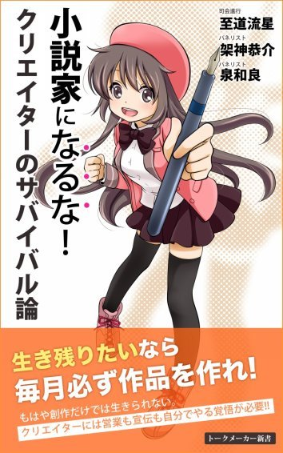

| 動画クリエイターになるな！: Youtube/ニコニコ動画で生活する方法の研究 (トークメーカー新書) | |
| 至道流星 & 架神恭介 & 泉和良 & 今井三太郎 | |
| Mirai Sozo (2017) | |
前書き ～～かわいい猫ちゃん動画の喩え～～
パネリストの一人である架神恭介です。本書『動画クリエイターになるな』を手に取って頂きありがとうございます。『小説家になるな』から引き続きの『なるな』シリーズも本作で三作目となりました。
至道、泉、そして私、架神の三名はこれまで互いに小説家としてのキャリアから様々な知見を交換・紹介してきましたが、今回は動画クリエイターである今井三太郎さんをゲストにお迎えして、動画製作に関する座談会を行いました。
しかし、なぜ小説家であるわれわれが動画の話をしているのか？ それはこのご時世、小説家であろうと動画とは無縁でいられないからです。Youtubeやニコニコ動画など、動画が身近になったこの時代、小説家も打てる手は全て打って自作の宣伝・売上に繋げたいのは当然です。私もこれまでに幾つかの動画を作り、書籍やイベント、関連グッズの宣伝を行ってきました。
ですので、本書は「動画クリエイターを志す人」はもちろん、他分野を主戦場としながらも広告宣伝活動の一環として、本業の搦手として、動画を扱いたい人たち全員の学びとなる書籍となっています。
本書で議論されている視点の一つをご紹介します。それは「かわいい猫ちゃん動画の喩え」です。
仮にエログロ小説家である私が、かわいい猫ちゃん動画を毎日アップしたとしましょう。私の飼い猫は非常に可愛くて、「かわいー」「かわいー」と言って毎日十万人が私の猫ちゃん動画を見てくれたとします。ですが、その十万人のうち何人が私のエログロ小説を購入してくれるでしょうか。彼らは動画に出てくる「かわいい猫ちゃん」を追いかけているだけであって、動画投稿者たる私に対する興味など毛ほども抱いていないのです。これでは再生数が十万あっても「小説を売る」という目的においては失敗なわけです。
そうではなく、私に興味を持ってもらわなければならない。動画を通して私に興味を持ち、私の小説に興味を抱いてもらわねばならない。動画を戦略的に利用し、最終目的（商品の売上）を達成するためには、動画を通してクリエイターの人間性を見せていき、「作品」のファンではなく「クリエイター」のファンを獲得していかねばならないのです。逆に言えば「クリエイター」のファンさえ獲得すれば、そのクリエイターが他に違うジャンルの作品を作ったとしても、ファンは高い確率で付いてきてくれる。「動くファン」を獲得できるのです。
そもそも動画を作るというのが大変な作業です。十年前と比べて撮影も編集も格段に楽になりましたが、それでも簡単ではありません。億劫です。だから、時間とエネルギーをかけたからにはそれだけのコストを回収したい。十分なＰＲ効果を発揮し、動画の効果を最大化したい。私はかねがねそう思ってきたし、きっと皆さんもそう思っているでしょう。
本書に出てくる様々な事例と議論が、皆さんの動画製作、ならびに動画運用の手助けとなれば幸いです。
架神恭介
パネリスト紹介
◆至道 流星（しどう りゅうせい）
小説家、システム開発、会社経営などに携わる兼業クリエイター。
小説、ビジネス書、漫画原作など五〇冊ほどの著作がある。海外翻訳も多数。創作者というよりビジネス色が強いクリエイター。主な著書に、『大日本サムライガール（全九巻）』『羽月莉音の帝国（全一〇巻）』『破滅軍師の賭博戦記』などがある。
◆架神 恭介 （かがみ きょうすけ）
漫画原作、小説、実用書まで、オールジャンルでの高い創作能力を持つ専業作家。音楽や宗教書など多くの分野で文筆業に携わり、独自のテーブルトークＲＰＧ『戦闘破壊学園ダンゲロス』の開発や運用も手掛ける。また執筆した実用書はベストセラーにも並ぶ。主な著書に『こころオブ・ザ・デッド』『仁義なきキリスト教史』『よいこの君主論』などがある。
◆泉 和良 （いずみ かずよし）
小説家、ゲーム制作者、ミュージシャンなど幅広い創作能力を有する専業クリエイター。制作したゲームは実に数百本とギネス級！ 主催するゲームサークル『アンディーメンテ』は二〇年間にわたって根強い人気を持ち、フリーゲーム制作界隈では日本最古参の有名人である。主な著書・ゲームに『エレＧＹ』『ボカロ界のヒミツの事件譜』『スターダンス』などがある。
◆今井三太郎 （いまい さんたろう）
趣味の動画製作が高じ、現在は主にライターとして活動中のクリエイター。
ソーシャルゲームディレクターをはじめ、開発から小売、アミューズメントに至るまで、ゲーム分野におけるＡからＺまでのあらゆる職歴を持つ。著書に『はじめようMinecraft』『Minecraftスーパー建築レシピ』、ニコニコ公式チャンネルとして『今井３チャンネル』http://ch.nicovideo.jp/imai3などがある。
本章の要点を先に述べておきます。
大前提として受け止めておくべきは、やはりそれが小説であろうとも動画であろうとも、どれほど面白いコンテンツでも人の目に触れなければ売れないということです。
では、人の目に触れるためには、どんな方法があるのでしょうか？
まずは大きなところを本章では押さえています。キーになるのは、動くファンの存在。発信力のあるファンは新たなファンを呼び込み、自分の限界を突破してくれる力になることでしょう。その広がりは、坂道を転がるように徐々に大きくなっていくはずです。
至道
おつかれさまです！
今回三回目となりました座談会ですが、開催時間となりましたので始めましょう。
よろしければ、それぞれ自己紹介をお願いしてもよろしいでしょうか。
至道
動画クリエイターを語るにあたり、第三回はゲストをお迎えしています。
お呼びしたゲストは、ニコニコ公式チャンネルにて長く独自のチャンネルを運営し、質の高いMinecraft動画で多くのアクセスを集めている今井三太郎さんです。
今井三太郎さんの代表的な動画のご紹介です。
Minecraft連続ドラマ「あしがる」第一話
http://www.nicovideo.jp/watch/sm17478802
ここまでクオリティが高い動画制作をされる方はなかなかいないので、よろしければ事前にご確認をどうぞ。
今井
動画を黙々と、時に喋りながら作る人、今井三太郎と申します。
今日はよろしくお願いします。
架神
こんばんは、今井さん。架神恭介です。
作家・漫画原作者と一応名刺には書いていますが、実際は色々やってます。
動画もそれなりに作りましたが、あんまりカネになったことはないです。
「広辞苑の女」
http://cagami.velvet.jp/dansyaku/dansyaku_koujien.shtml
いや、そういえばすっかり忘れてたけど、初めてバズったのは動画のこの作品でした。
まだバズるなんて言葉もない頃でビデオをダビングして通信販売してました。
架神
とりあえず俺の動画作品だとこの辺を自己紹介がてら貼っておきます。
【おそらく宇宙一】 鏡子の一滴残らずおしぼりタオル【吸水性が高い】
http://www.nicovideo.jp/watch/sm25665470
【拙者】戦闘破壊学園ダンゲロス赤蝮Tシャツ【バイセクシャルにござる】
http://www.nicovideo.jp/watch/sm25665557
パンクベース教則ビデオ（Punk Rock Bass Lesson）
http://www.nicovideo.jp/watch/sm737103
あとYoutuber目指してやったやつもあるけど、恥ずかしいのでリンク貼らない！
架神
そういえばこれも動画といえば動画ですね。
マンガ新連載研究会
https://lounge.dmm.com/detail/284/
漫画に関するオンラインサロンをやってて、これは月額二〇〇〇円で毎月おれのマンガ分析動画が配信されるサービスです。
今日も収録やってました。
動画によるマネタイズには今はこんなのもあるよ、という一環として捉えてもらえればー。
至道
架神さんのマンガ新連載研究会すごいっすね。
開始したばかりなのに、結構安定しちゃってる感じじゃないですか。参加人数も多いですし。
架神
いやー。まだ始めたばかりなので......。
これから増えていくのか減っていくのか。楽しみ半分、恐ろしさ半分って感じですが。頑張って行きます。
至道
第三回も司会進行を務めさせていただく至道流星です。
長らく会社をやっています。二〇年前になりますか、まだ動画配信技術が定まっていなかったころから、ウェブでの動画配信に取り組んできました。生放送とチャットを組み合わせたりして、ライブチャットを日本で初めてやったのがぼくかもしれません。ただまぁ、これって証明できませんし、誇るつもりもないので、そういう取り組みをしてきたということだけお伝えしておければと思います。そんなわけで、動画配信には興味津々で、クリエイターの最新事情は誰よりも知りたいと思っております。
至道
あと、泉さんは少し遅れての参加になるかもしれません。一時間ほど遅れるかもしれないと聞いています。
至道
第三回のテーマは『動画クリエイター入門』になります。
個人的にも非常に興味があるテーマでした。クリエイターとして活動していく以上、ニコニコ動画やYoutubeの活用は欠かせない時代になりました。
今井
改めまして今井と申します。
ニコニコという動画共有サイトに巣を張ってひっかかった蝶を食べて生きています。
今日は職員室に呼び出された中学生男子の気分です！
架神
今井さん、今日はよろしくお願いします。
動画をカネに変える方法をおれはすごく！ 知りたい！
至道
架神さん直球ですね～。
ぼくも今井さんには色々お聞きしたいことありましたが、まずはそのストレートな質問からいきましょうか。
ズバリ、動画をカネに変えるためには何が必要ですか？（真顔）
今井
思った以上にストレートな質問が飛んできた！
架神
実際問題、表現手段って色々あると思うんですよね。
文章が最適な時は小説を書けばいいけど、「これ、動画でやる方が映えるな」って時もあるんです。
さっきのだとパンクベース教則ビデオとか。
そういう時に「動画をカネに変えられるビジョン」が見えてると安心してGOできるので、今井さんからその辺の知恵を盗みたい！
文章だとKindleとか編集者に打診とかいろいろあるんだけど、動画はまったくわからない！
至道
架神さんのYoutuber、すごい見たいです。あとで個人的に見せてください（笑
至道
架神さんはエンタメのプロですしかなりのセンスの持ち主のはずなのに、なぜYoutuberとしてのアクセスが伸びなかったのか、
そこは運も大きいかもですが、他に何が違うんでしょうね？
架神
いやまあ、俺のYoutuberって言ってるのは、『放課後ウィザード倶楽部』っていうチャンピオンで連載してたマンガに紐付けてた動画なんで、作品と一緒にコケちゃった感じですかね......。
それでもずっとやってたら違ったかもしれないけど、忙しくて手が回んなくなっちゃった。いや、やってた段階である程度数字が得られてたら続けてたはずだから、卵が先か鶏が先かみたいな話だけど。
至道
ダンゲロスのボードゲームも、プレー映像を撮って流す企画とか少しやりとりしたじゃないですか。せっかくなので、動画創作の何か参考例みたいな形で仕掛ける方法があればやってみたいかもですね。
至道
本は、まだまだ間に出版社が入りますし、出版社の意向も強いんですよね。だけど動画は、直接ファンと繋がれる強みがあります。クリエイターにとっては望ましい環境なんですよね。ちゃんとカネになるなら、ですが。
今井
動画とカネについてはここ数年でようやく受け入れられてきた感じですが、ただ稼ぐだけなら必要なものはヒトっすね。人海戦術に勝るものはないです。
至道
ヒトですか。それは能力的な意味で？
架神
人海戦術......!?
さっそくおれの知らない概念が出てきた。
動画で人海戦術？ どういうことなんだ！
今井
能力ではなく、数ですね。
動画で稼ぎをあげるには、どれだけ再生されるかが最も重要になるわけですが、
当然一人、二人が頑張って再生してもあまり意味はないわけで。
どれだけ再生してもらえるか、コメントや評価をもらえるか、といったところを言い換えるなら
どれだけ「動くファン」を抱えているかという話になってきます。
至道
なるほど、告知をリツイートしてくれたり、コメントしてくれたり......。
動くファンという概念は斬新ですごく面白いです。
作家業界では聞きませんでした。
架神
なるほど。
抱えているファンの数が重要というのは文章でも当然そうだけれど、おそらく、動画は直接的な支払いがないので、その分、数の力がより重要になってくるという感じですかね。再生数・イコール・マネーだから、数がそのまま稼ぎに直結するというか。
今井
なのでラノベや漫画と違って、動画の場合ですと、作品よりもいかにクリエイターにファンを紐付けるかを重視する方が多いです。
動画といっても色んなジャンルがあるので一概には言えませんが、特にYoutuberやニコニコ界隈のクリエイターと呼ばれる人たちにとっては重要なことです。
架神
先日、第二回オンライン座談会では「ラノベは作品にファンが付き、文芸は作家にファンが付く」という話をしましたが、動画も後者寄り、ということですかね。
今井
当然動画によってつくファンもそれぞれですし、彼ら彼女らが何を求めているかによってファンの質も変化します。
ファンが多ければ、再生数も回るし、動画そのものも盛り上がります。
どんな業界でもそうかもしれませんが、盛り上がっているところには更にヒトが集まってくるわけで。
架神
おお......。
分かってはいたけど、こりゃあ、一朝一夕では身につかなそうな世界だ......。
架神
読者の方もいるので、基礎的なところからご説明お願いしたいのですが、まず動画再生数はどのような形で収益へ繋がるのでしょうか？
今井
動画からの収益化には様々な方法がありますが、
主に動画共有サイト側から提供されているシステムを活用したものとなります。
Youtubeだと再生毎に広告が表示されることがありますが、広告の表示回数＝再生回数で収益化が可能です。
ニコニコの場合ですと広告は表示されませんが、クリエイター奨励プログラムといったシステムに動画を登録することで毎月再生数等に応じたポイントが付与されます。これを換金するシステムになっています。
架神
Youtubeのは知ってたんですが、ニコ動のは面白いですね......。
ニコ動はプレミアム会員で集めたお金を奨励金として配ってるのかな。
しかし、どちらにしろ再生回数（＝人を集めること）がポイントなんだろうな。
至道
大半の動画作成者は、ファンが付くところまでいかないと思うんですよ。
でもファンが付いて一気に飛躍する人もいる。どこの創作世界でも一緒かもですが、とくに動画の場合、その明暗を分けるのは何でしょう？
今井
動画の場合ですと、ファンをつける方法やコツはいくつかあるのですが
もっとも簡単な方法は、既にファンがついているところから連れてくる方法ですかね......。
既に盛り上がっているジャンルがあったり、盛り上がっているクリエイターがいれば、そこに寄せていくというｎ番煎じな方法が手っ取り早いです。ヒトによってはそれを嫌う方もいますが。
至道
［既にファンがついているところから連れてくる方法］
これって、ビジネス界でも一緒ですよ！
たとえば、ソシャゲとかだと、すぐサービス終わったりするじゃないですか。でも終わりそうなソシャゲと、新規開発したソシャゲで共同イベントとかやって、ファンを上手いこと移し替えるんですよね。
架神
［当然動画によってつくファンもそれぞれですし、彼ら彼女らが何を求めているかによってファンの質も変化します。］
これと「既にファンがついているところから連れてくる」というのを掛け合わせて考えると、顧客（ファン）のニーズを見越して、既に確立している商品ジャンルに割り込んでいって、顧客に適切な商品（動画）を届ける、ってことになるんですかね。
今井
そうです。戦略的にファンを獲得しようと考えるのであれば、効果を期待できる戦略の一つです。
至道
最初の数字のとっかかりは、純粋に面白い動画を作れば伸びるものですかね？
小説は、「どんなに面白くても容易に売れない」ときっぱり言い切っていた架神さんの考えは確かだと思うんですよ。だって見てもわからないから。何時間もかけて読み終えて、ようやく評価できるようになる。
でも動画って、音楽に近くて、パッと見てわかる部類のコンテンツだとは思うんですね。だから面白いものを作れれば希望はあるんでしょうかね？
架神
ここまでの流れだけで言うと、「単発で面白い動画を作っても伸びない」という感じに受け取れなくもないんですが（人気のあるジャンルを見越して割り込んでいき層を奪わねばならない）、やっぱり単発の面白い動画で跳ねる、ってのもあるんですよね？ というかあって欲しい。
今井
どれほどクオリティが高いものを作っても、まず目に触れられなければファンも増えないですし、起爆剤のようなものは必須かと思われます。
動画の場合、爆弾が爆発するイメージよりも、雪だるまが坂を転がってどんどん大きくなるイメージの方が適切かもしれません。一度転がれば、あとはひたすら大きくなっていきます。
転がるきっかけを意図的に作れるヒトは少ないですが。
至道
そうか、最初に考えるべきは起爆剤の用意と考えるとわかりやすいですね。
最初にどこかにくっついてファンを攫う方法もあるでしょうし、誰かに喧嘩を売って注目を浴びたり......。
架神
む、む、む......。
やはり「面白いものを作っても見られなければダメ」というのはどこの業界も同じか。
どうすれば転がっていくんですかね。
小説なら、少なくとも出版社経由で書店に並べば、ある程度の宣伝効果があるので、転がり始めることを期待できるんですが、動画だとネットなので完全に自力宣伝次第な気がするんですよね。
前回、Kindleに関する話でも出たんですが、ネットの個人発コンテンツはとにかく宣伝が難しい。
今井
「どんなに面白くても容易に売れない」は動画でも言えることですね。
再生ボタンをポチッと一回押してもらえるかどうか、これは書店で本を手にとってもらえるかどうかに近いです。なので盛り上がっているジャンルに沿い、タイトルやサムネイルを工夫し、そしてできる限り目立つところに置く。
いうなれば、この目立つところに置く。という点で人海戦術が役に立つわけです。
ファンはヒトなので、面白ければ、あるいはクリエイターを気に入っていればどんどん拡散してくれるので。「動くファン」ってのは言うなれば、クリエイターが水面に石を投げたときの波紋のようなものですかね。
架神
あー、そうか、そうか。
その「転がし方」が「盛り上がりに寄り添いファンをかっさらう」というやり方なわけか。
架神
うううううーーーーむ......。
興味深い反面、なかなか厳しい話でもありますな。
今までの今井さんの話だと、かなり計画的に動画に付くファンを増やしていかないとマネタイズは難しそうだ。
おれがパッと思いついたアイデアを「よし、これを動画でやろー」ってやっても、大した数字は叩き出せない感じか。
でもやりたいのは「パッと思いついたアイデアを」「チャッと動画にして」「ドカンとマネタイズ」なんですけどねー。難しいのかなー。
至道
今だと、マリオメーカーとかスプラトゥーンとかポケモンＧＯにくっつくのが手っ取り早いですかね。競合はすごい多そうですが、そこを足掛かりにするしかないんでしょうか。
今井
ソシャゲに当てはめた場合、ファンはユニークユーザーですね。
その中でも課金してくれるユーザーが多ければソシャゲ自体が盛り上がるのと一緒で、
動画でもコメントや拡散支援をしてくれるユーザーが多いと、そのぶん盛り上がりますし再生数も伸びます。課金のかわりに手間を頂戴している形になりますかね。
架神
おれの過去の動画を見てみると、パンクベース教則ビデオ（http://www.nicovideo.jp/watch/sm737103）が一〇年前の投稿で三三〇〇〇再生。Youtubeは九年前の投稿で二〇万再生。こっちは結構伸びてんな......。
しかし、ダンゲロスの鏡子タオル（https://www.youtube.com/watch?v=pRFGFLsFkfo）だとニコニコ、Youtube合計で四〇〇〇再生。二〇万冊売れてる漫画（『戦闘破壊学園ダンゲロス』）の力を借りても四〇〇〇再生。地道にファンを捕まえていかないと、やはり厳しいのかな。
至道
架神さんや泉さんは、かなり動くファンの方々を持っている作家だと思うのですよね。だから動画に進出する基盤は出来ているような気がします。あとはコンテンツさえ間違わなければ、他の人よりずっと上手く転がしていけるのではないかと思えるのですが。
架神
［至道先生］
しかし現実問題、数字的には上みたいな感じなので、やはり「思いついたことを単発で」やっても、あんまり伸びない気がしますね。
鏡子タオルＣＭ動画とかは、もっと数字が跳ねて高い宣伝効果を出せるかな、と期待していたところがあったんですが。
至道
今井さんの場合だと、マインクラフトと、緻密な城の建設というのが、いわば起爆剤だったんですかね？
今井
もちろんそれもあると思いますが、実はマインクラフトで建設をしただけの動画は、このあしがる以前にもアップロードしてたりします。そっちである程度事前に「そういうのが好きな層」をファンとして抱えられていたというのが、あしがるを公開した際に小規模ながら人海戦術として作用した部分はあると思います。
まったくの無名の状態から同じあしがるを公開していたら、また違った伸び方をしたと思います。
架神
な、なるほど......［あしがる］
ドカンとヒットしたように見せても実は助走段階があるんですね。
至道
［まったくの無名の状態から同じあしがるを公開していたら、また違った伸び方をしたと思います。］
これは意外な発見でした。聞いておいてよかったです。
あしがるで一気に伸びたのかと思っていたのですが、それ以前の地道な活動がベースにあったのですね。
架神
しかし、そうなるとやはり「地道な頑張りが必要」になっちゃうな。
今井
［ネットの個人発コンテンツはとにかく宣伝が難しい。］
これがまさにネットだとマンパワー。ヒトのちから、人海戦術がもっとも効果的たる所以です......。
ヒトからヒトへの伝播は侮ってはいけないのです。中にはフォロワー何十万人といったとんでもない発信力を持った方もいらっしゃるわけで彼らは別格ですが、一人一人のファンにもそれぞれ発信力がありそれが機能している限り動画は再生され続けます。
今井
［パッと思いついたアイデアを「よし、これを動画でやろー」ってやっても、大した数字は叩き出せない］
まさにその通りです。まず再生されること。これが最初のハードルです。
次に再生したヒトが、他の誰かにそれを伝えたくなること。これが難しい。
だいたいのヒトは再生したらそれで終わりなので、そこで動いてくれるファンがどれだけ貴重か。
至道
ファンにも発信力があるという視点は大事ですね......。
小説家は皆、おろそかにしている視点だと思います。また、作家デビューを目指して小説をコツコツ書いている人たちも、認識しておいたほうがいい点かもしれません。ファンがファンを連れてきてくれるのだということは重要ですね。
架神
［ファンがファンを連れてきてくれるのだということは重要ですね。］
小説でももちろんあると思いますが、ネット動画の方が顕著なんだと思います。
というか、動画はそれが全てというか。
小説もなろう系とかだとあるのかな。
至道
動画だと、パッと拡散したくなるパワーって重要でしょうね。動画は、「面白い」「すごい」と思えば条件反射的に拡散してくれる。
架神
今井さん、今井さん！
「思いついたワンアイデアの動画をドカンと当てる」方法ってないんですか！
今井
できなくはないですが、悪魔の取引に近いです。
これはゲーム実況といったジャンルでよく宣伝効果を期待されるポイントなのですが、既に多くのファンを抱えるヒトに宣伝して貰えればそれなりの数字は期待できます。
もちろんただ宣伝してもらうだけではなく、その魅力を言葉で伝えてもらえれば尚良し。
ようするにネットだと単純なファンの数＝宣伝力という風に考えられる場合が多いです。
残念ながらその限りではありませんが。
至道
既存の有名プレイヤーに宣伝してもらうという足掛かりみたいなものが必要な手続きになるのですかね。
今井
あしがるに関してもその側面は大きかったと思います。既に「Minecraftと言えばこの人！」みたいな空気もできつつあった頃なので、そこに切り込みつつ、彼らを味方にできたことは非常に大きいです。未だに彼らとは一緒にキャンプ行ったりしてますけど。
喧嘩腰な姿勢と、協調。言うなれば切磋琢磨という姿勢で向き合うのが正しいのかもしれません。
協調だけでは全体のクオリティが下がってジャンルが壊死しますし、喧嘩腰ばかりでも見ているファンが疲れるので。
架神
［喧嘩腰な姿勢と、協調］
喧嘩腰な姿勢、ってよくわからないんですけど、動画主の間で戦闘的なアトモスフィアとか出したりするんですか？ ちょっとイメージできないです。ラッパーみたいに動画同士でDisりあう？
至道
今井さんはキャラ立ちしていますよね。たしかに喧嘩っぽく見せつつ、実はちゃんとしてる親分肌だというイメージでしょうか。
そういう基盤があって、分野も間違いなくて、クオリティも高いのなら、かなり勝算は期待できる状況だったのかなと。
ただまぁ、あれだけのマインクラフト動画を作られたら、そりゃあ拡散されるだろうなと思います。あそこまでの品質を高めることは、普通の人にはできませんし。
架神
［既に多くのファンを抱えるヒトに宣伝して貰えれば］
スイマセン。ちょっとよく分からないんですけど、「悪魔の取引」......ということは、意図的にこれを為しうる方法があるのでしょうか......。
架神
有名人に紹介される、というのは、単に高クオリティなものを作っていたら、同じジャンルの人が（その人もそのジャンルが好きだからやってるので）純粋に紹介してくれる、と、そういう意味ですかね。
なんかそれだけ聞くと特に悪魔の取引には感じないんですが。
そんなに邪悪な行為なんですかね......？
今井
［「悪魔の取引」......ということは、意図的にこれを為しうる方法があるのでしょうか......。］
特にジャンルとして多いのはゲームですかね。宣伝としてYoutubeやニコニコ、その他生放送系のサイトなどでクリエイターを起用するパターンが多いです。もちろんギャラも出ていますし、なんなら芸能事務所のようなものも存在します。
動画クリエイター同士が、というよりも、企業と動画クリエイターが、といったケースが多いです。
架神
ああ......！ なるほど！
既に数字を持っている動画主に、動画を作ってもらって、そのパワーで一発当てるということですか。
「ワンアイデアを思いつく」「有名クリエイターにギャラを払って作ってもらう」「そのファンの力を借りて動画をヒットさせる」
こういう流れですかね。
至道
［企業と動画クリエイターが］
なるほど、色々見えました。
すっかりビジネス化している側面があるんですね。その辺は、たぶん突っ込んではいけないところなのでしょう。大人として。
今井さんも話せないラインがあるでしょうし。
至道
なんか動画創作の世界より、まだ小説のほうが健全性があるのかもしれませんね。
それはつまり、動画世界のほうが人も圧倒的に集まるし儲かる産業であって、小説のほうは人が集まらず儲からない産業であるということの裏返しでもあります。どっちもどっち。
ぼくもビジネスマンの一人としては、動画世界のほうが興味アリです。
至道
ひとまずここまでで成功のための流れをまとめておくと......
（一）すでに大勢のファンがいるところに飛び込む
（二）身近なファンを作る
（三）勝負コンテンツを作る
という展開でしょうか。
今井
要約するとその通りです。
本質的なところで言うと、
（一）すでに大勢のファンがいるところに飛び込む
まず人目に触れること、ファンになってくれるのは一〇人に一人か、一〇〇人に一人かといったところはクオリティによりますが、まず母数を確保しないことには話にならない。
（二）身近なファンを作る
熱狂的なファンほど頼りになる味方はいません。数が多ければ尚良し。ただしファンから見れば何百人といるクリエイターの一人でしかないので、思わずコメントや拡散したくなるほどのクオリティや更新頻度など施策が求められます。
（三）勝負コンテンツを作る
ここではじめてクオリティ勝負。再生一〇〇人で一人ファンがつくか、一〇人ファンがつくかがここで決まる。
至道
今井さんが書いてくれた図式は、
小説家デビューを目指す方々にも丸っと参考になりそうな......。
まず人目に触れることってメチャメチャ重要ですよね。
なろうで埋もれてたらいつまで経ってもデビュー難しいのと一緒です。そもそもなろうのデビュー確率って〇・一％よりずっと低いんじゃないでしょうか。
一〇〇〇作品中で一作未満。いやもっと低いか。なぜ皆それに気づかないのか。
動画クリエイター業界は近年勃興したばかりの新しい分野であり、非常に浮き沈みが激しく、流動的です。
それだけに個人個人が生身で戦場に出て戦う舞台であり、より剥き出しのパワーがモノを言います。ここで言うパワーとは、残念なことにコンテンツ自体の面白さではありません。成功に繋げるためには、コンテンツの面白さは副次的な要素であり、さまざまな周辺事情がモノを言います。
（一）人が集まるジャンルに飛び込むこと。
（二）起爆剤を仕込んでおくこと。
（三）動くファンを獲得すること。
どれも当たり前のようでいて、普段から意識してこれらを実行していける人は多くありません。
また、息長くその業界で戦い続けたいなら、作品よりも、クリエイター本人にファンを紐づけることも忘れてはなりません。作品を消費して終わってしまうだけの視聴者がいくら多くとも、次の自作の成功には繋がってくれないのです。選ぶジャンル・コンテンツの作り方によっても、作品が独り歩きしてしまうものと、クリエイターなしではその動画が成立しないものとがあります。
この動画クリエイター業界での立ち回り方は、あらゆる創作者にとって活用できるノウハウになるに違いありません。
至道 流星
■Tips
◆本は出版社が間に入るが、動画は直接ファンと繋がる。
◆動画を流行らせるには人海戦術――つまり動くファンと共に戦うことが必要。
◆動画業界では、作品よりも、クリエイター本人にファンを紐づけすることが重要。
◆動画の収益手段は、動画共有サイト側から与えられるシステムを活用するしかない。
◆Youtubeだと広告の表示回数＝再生回数で収益化が可能。ニコニコ動画の場合だとクリエイター奨励プログラムに登録し、再生数に応じたポイント換金で収益化が可能。
◆ファンを獲得するための最も簡単なものは、すでにファンが存在するジャンルに飛び込むこと。
◆どれほどクオリティが高い動画でも、まず目に触れられなければファンは増えない。
◆起爆剤を仕込んで挑もう。
◆どんなに面白くとも容易に売れないのは、小説も動画も一緒。
◆地道な活動を通して動くファンを獲得しておき、地盤を作る。
◆ファンにも発信力がある。
動画が広まるには、他のコンテンツ以上に出だしのパンチ力が必要です。また、クリックを誘うためのサムネイルの工夫など、念入りな準備を重ねなくてはなりません。
参入障壁が低く、膨大な人が集まる分野に成長した動画市場は、日々凄まじい速度でのノウハウ・テクニックが積み重ねられています。
そのためどのような創作活動においても、この動画創作分野で培われた経験値を役に立てることができるでしょう。
架神
「熱狂的なファンほど頼りになる味方はいません」って今井さんが仰ってましたけど、これ、自分の身に照らして考えると、熱狂的ファンの獲得って結構たいへんですよね......。
おれもボードゲームのプレイ動画とか結構見てますけど、コメントはまずしないし（お風呂入りながら見たりなので）、「いまこれを見てますよ」的なツイートやブログで紹介したりも滅多にしないんですよね。その意味では「熱狂的なファン」にはなったことがない。
おれが見てた動画たちは、あんなにすごいクオリティなのに、おれもすごいことを認めているのに、それでもコメントもしないし、ツイートもしない......！ 熱狂的ファンの獲得......なんたる高い壁！
架神
まず再生される、というのはタイトルとかサムネイルを魅力的なものになるよう工夫するとして、
［他の誰かにそれを伝えたくなること］
これには一体どういう要素が必要なんだろうか。
今井
動画の場合ですと、インパクトとクオリティですかね。
「これは友達に見てほしい」と思えるパンチ力と、「これなら友達に見せられる」と思える最低限の品質が伴っていれば、やっぱり拡散されやすいです。
架神
インパクトとクオリティ......。
ふつうに......ふつうにハードだ......。
今は誰でも気軽に動画を作って投稿できるようになりましたけど、気軽に作られた、ある意味低クオリティな動画は、その理論では基本的に大ヒットすることはない？
至道
架神さんの「コンドームごはん」みたいなコンテンツは、インパクトとクオリティを兼ね備えているので、電子書籍じゃなくて、まさに動画で勝負すべきコンテンツだったのではないかと思います。
今井
仮にコンドームごはんを動画にした場合、視聴者が女の子だと拡散しにくいと感じるかもしれません。「拡散しやすさ」も大事ですね。
架神
そういやコンドームごはんはたくさん騒がれたけど、実際にはあんまり買われなかったんだよな。
動画だと騒いだついでに再生されるかもしれないので、たしかに動画向けだったかもしれない......。
まあ、あれはKindleの売れ行きを試してみたい、という意図が大きかったから......。
至道
架神さん、一緒に組んでゲーム実況から初めてみますか？（笑
これを商売にしようってわけじゃなくて、創作者の一人としてとても興味があって、動画コンテンツ作りや分野の成り立ちを内部からじっくり眺めてみたいです。
架神
［至道先生］
昔のファミコンとか一緒にやりますかね......。
至道
やってみますか。でもぼくらがやると、たぶん中途半端で終わらせられなくて、結構作りこんでしまう心配がありますね。
意識して作りこまないようにして、気楽にすべきかもしれません。
至道
今井さん個人のお話になりますが、マインクラフトには意識して飛び込んだんですか？ それともただ好きだったから？
今井
Minecraftに関しては愛だけでしたね......。ひたすら石を積み上げるという賽の河原が如き所業が全体を通して作業の大半になってくるわけです。それに時間もかかるので、手っ取り早く伸びたいだけなら本来選ばない方がいい素材ではあります。一時期Minecraft動画だらけになっていた時代もありましたが、それはまさに伸びているジャンルに寄せる努力を個々人が敢行した結果だと認識しています。
そのうち何人かは実際にファンの大量獲得を成し遂げているわけですし。
至道
今井さんレベルの動画になると、愛がないと無理だなぁと確かに思えます。
あれだけ多くの人がマインクラフトに一斉に参入しても、勝ち残った人はごく少数ですよね。それでも、まったく人から見向きもされないジャンルに飛び込むよりは、勝率は高いことは間違いないと。
創作の道は絶望的なまでに長いものですね～......。
至道
今井さんの場合は、自分の好きなジャンルが、たまたま盛り上がってくれて、そこにハマったということなんでしょうね。
クリエイターとしてはかなりの幸運なパターンかもです。
今井
運には恵まれました......運もそうですが、ファンに恵まれましたね。
どんなジャンルにもすげー勢いで拡散してくれるファン層のようなものが存在して、そこに注目してもらえるように動画を撃ち出した結果、彼らの評価を得るに至りそこから更なる広がりを見せて雪だるまがボンボン大きくなっていった感じです。
とくにMinecraftはユーザー間でのシェアが激しい媒体でもあるので、横の繋がりが強い割に世界が狭かったというところもポイントですね。今同じことをMinecraftでやっても同じ結果は得られないかと思われます。
至道
とことんタイミング重要ですね。
第一回や第二回の座談会でも出たことですが、創作者はもう風が自分に吹いてくるまで、コツコツ作り続けるしかないっすよ。どこの分野でも一緒かもです。
至道
ちなみに、動画クリエイターとして食えている人ってどのくらいいるものなんですかね？
デビューっていうのかどうかわかりませんが、どのくらいの人が一定ラインを越えていて、この先もずっと生き残れていくのかとか、興味あります。
今井
［動画クリエイターとして食えている人］
ごく一部です。例えるなら日本に知事と呼ばれる人間が何人いるか、ぐらい動画一本で食っていくのはハードル高いです。副収入としてはそれなりに。
安定して一定の再生数を稼ぐには、大きい一発よりも、新しい動画を小さく細かく打ち続けるのが肝なのでそりゃ作業としては大変な労力です。
至道
［日本に知事と呼ばれる人間が何人いるか、ぐらい］
小説家でまぁまぁ安定して稼いでいけるってのは一〇〇人くらいなので、動画創作はそれ以下ということなんでしょうかね。小説家業の半分くらい。
でも、小説家より裾野が広いように感じます。動画創作が副収入になっている人の割合は、食べられない小説家よりずっと多そうです。副収入を得るクリエイターを目指すなら、小説より動画なんですかね。
至道
［新しい動画を小さく細かく打ち続ける］
これって凄まじい労力ですよね。
動画創作者のほうがいいっぽいニュアンスを上で書きましたけど、自分のブランド形成や、形として周りから評価されやすいという意味では、やはり小説家というシロモノに意味不明な権威のオーラがまとわりついている分だけ、小説家のほうが良さそうではあります。
架神
若い人ならともかく、年配の人が相手だと、「動画を作って動画配信サイトで流してます」って言っても、「えっ、つまり......テレビの仕事？」「いやテレビじゃなくって......」みたいになりそうですしね。「小説家です」なら全年齢層から一定の承認を得られる......。
今井
［動画創作が副収入になっている人の割合は、食べられない小説家よりずっと多そうです。副収入を得るクリエイターを目指すなら、小説より動画なんですかね。］
その通りだと思います。小説の場合、手に取って、買ってもらうといったプロセスを経ますが。
動画だと再生ボタンぽちりのワンアクションなので遥かにハードルは低いです。
そのぶん再生一回あたりの収益は雀の涙ですが、塵も積もればというやつで。
架神
［新しい動画を小さく細かく打ち続ける］
今井さんレベルのクオリティだとキツそうですが、日常系のちょっとした動画をアップする系なら、慣れればいけそうな気がしないでもなし。
至道
［日常系のちょっとした動画をアップする系］
猫ですよ、猫。
万国共通の最強コンテンツの一角です。
まず猫を飼います。
今井
それ最強です。今ならサーバルキャットとかいいんじゃないですかね。一定数のファンが常に存在し、彼らがずっと回遊している特殊なジャンルです。
デメリットとしては、例えばクリエイターとしてまったく別のことを始めた場合、そっちにはまったくファンが流れません。ジャンルから離れた途端、急に「動かないファン」になっちゃいます。アニマル系は永世独立国家です。
至道
［それ最強です。］
ですよね！
ちょっと本気で猫を飼いたくなりました。
ファン層もそこにしか興味がないってのは非常にわかります。クリエイター本人には無関心なファン層でしょうからね。
でもあまり色気を出すと、動物愛護を大事に考えている方々からバッシングされる可能性もありそうです。
架神
ちなみに、もしふつうの高校生とかが「おれは今日からYoutuberで生きていく！」とか「ニコ生主で生きていく！」とか決意した場合、計算と努力で生きていけるもんなんでしょうか。
一、ぜんぜんむり運が絶対必要
二、すごいキツイけど可能ではある
三、ちょっと努力すりゃーいけるいける
どんな感じですかね？
至道
親は泣きそうですね。
でもこれからの時代、若いうちは一度そういう経験を経てからサラリーマンになったりしたほうがいいかもです。
今井
勝算はけしてゼロではないです。動画クリエイターは自分自身をプロデュースする作業でもあるので、己の武器を活かし、的確に施策を打つことができれば可能性はあります。
ただふつうの高校生が持つ武器は往々にしてファンの防御を貫通することはなく、動画頻度やクオリティといった施策も、既存のクリエイターたちが誇る経験値の前には無力であることが多いです。
至道
［ふつうの高校生が持つ武器は往々にしてファンの防御を貫通することはなく］
良い表現ですね～。まったくその通りだと思います。
小説分野にも当てはまります。小説業界で異世界モノが全盛なのは、武器がない書き手でも比較的戦える分野であるためというのが理由の一つです。それが巨大分野になりました。異世界ブームはいずれ去るでしょうが、そのタイミングが読めたら、株でも金融取引でも億万長者になれます。
動画だと異世界というわけにはいかないので、武器は貫通しないでしょうね。
至道
ちなみに今井さんはこれからもずーっと動画創作を続けていくつもりですか？
また、動画創作に希望は持ってますか？
今井
動画共有というシステムが確立されてまだ十数年といったところなので、一〇年先、二〇年先を考えたときに書籍に比べれば心もとないのは確かですが。動画共有というのは個々人がテレビ局を持つようなもので、今後さらに大きく発展していく可能性は十分あります。
私の場合は趣味によるところが大きいので、枠組みが崩壊しない限りは続けたいですねえ。
至道
趣味によるところが大というのは、理想的なクリエイターの姿だと思えます。うらやましい限り。
いずれテレビと個人メディアの境目が無くなる時代は確実に来るので、そのときにもう一段の飛躍を遂げるチャンスがあるかもしれません。小説なんて全然敵わない大きなメディアになると思います。
至道
あと今井さん、すべてにその場でお答えしなくても大丈夫ですよ。
翌日に持ち越しても全然ＯＫですし、それが数日間続くこの座談会の利点です。ご自身のペース配分で、無理なくやってもらえればと思います。
架神
ですねー。
僕も今日はそろそろお暇しようかと思ってます。
夜も更けてきましたし。
いやあ、初日から非常に良い話がたくさん聞けました。
ウーン、ワンアイデアを何とかカネに変えたいなあ。
戦略をもってコツコツ動画を作り続けていくってのは確かにそうだろうと思うんですけど、実際問題、「表現方法の一手段」として動画を位置づけてやってくなら、ずっと動画を作り続けるってのは不可能なんですよねえ......。
架神
僕は今日はこの辺にて。
また明日からも色々お尋ねいたしますねー。
至道
了解です、おつかれさまです［架神さん］
十二時も回ったので、遠慮なく今日は外してもらって大丈夫ですよ。
お時間のあるときにでも、お答えしていってもらったり、逆に質問を投げたりしてもらえればと思います。
今井
架神さんお疲れ様です。
「表現方法の一手段」としての動画コンテンツは、技術習得や機材の準備などに時間やお金がかかるので、安定させるのは難しいかもしれません。
ＳＮＳでちょっとした動画がバズることはよくある話ですが、それはクリエイターに紐づかないので、結果的に「動くファン」は増えないんですね......。
至道
それなりの設備と編集技術がいりますね。
編集するための膨大な時間も必要です。
すぐに参入できる反面、評価されるクオリティを保つには、かなりノウハウを習得する必要がありますね。
今井
［すぐに参入できる反面、評価されるクオリティを保つには、かなりノウハウを習得する必要がありますね。］
最近だとスマホのカメラも非常に高性能なものが多いので、ハードルは低くなったように感じられますが。見やすさやクオリティを追求するとやはりある程度の編集技能は必要になってくるので......。
サムネイルなんかはまさにそれですね。いかに再生ボタンをポチらせることができるかを他人と競うわけですし、適当にしたくないところの一つです。
至道
今井さんもご遠慮なくお休みになって頂いて大丈夫ですよ。
ぼくも今日はそろそろ落ちようと思います。
お時間の合間とかに、気づいたらログインして議論するみたいな感じでＯＫです。あまり気を遣いすぎずにどうぞ。
至道
今回の座談会は三日二十三時までです。
それまで緩くお付き合いください。
ユーザーの方々も、ご質問事項などあればお気軽に書き込みしてみてください。
ぼくは今日は落ちますので、引き続きよろしくお願いします。
今井
かしこまりました。
長期戦なので温かいものでも食べながらのんびりレスしていこうと思います！
今井
ジャンル自体の持つ拡散力を上手く使っているなと感じるのは二次創作界隈ですかね。
当然、好きだからこそ、愛とリスペクトがあればこそ成立しているものではあるのですが、実践例を見てみるとジャンルそのものよりも作品に紐づく形が多い印象を受けます。
例えるならジャンルという生簀の中には多くのヒトが泳いでおりまして。
作品というエサがそこに定期的に放りこまれます。するとヒトは作品に群がるわけでして、一部のクリエイターという名のヒトは作品を食べてめっちゃ美味しいフンをひり出すわけです。フンも美味しいからそこにもどんどんヒトが群がって......。
そうやって生簀の中が盛り上がっていると、「おっ、賑わってるね」といった具合にとなりの生簀からもどんどんヒトが入り込んできます。エサを食べつくしたらまたとなりの生簀へどんどん移っていくわけですが、時折最初の生簀にエサが放り込まれたら、その生簀のエサが美味しいと知っているヒトはやっぱり戻ってくるわけで。
言うなれば、ジャンルは本籍であり故郷。
拡散を目的として進出するのであればより流動的なエサ（作品）を追ってフットワークを軽くしておいた方が効果的なのかな、と思われます。
今井
ラノベですと異世界ブームの前は学園異能ブームといった具合に、カテゴリ全体を牽引する作品から次々と新たな作品が生み落とされていくイメージが。ブームに寄せればそれだけファンによるビューやコメントなんかが数字として明確に現れてくるので、モチベーション的にもブームの近くは居心地がいいってのはありますね。
もしブームからかけ離れた、例えば宇宙を駆ける一匹狼が立ち寄る先々の星で一夜限りのラブロマンスを毎回繰り広げるようなＳＦを書いたとして。毎回熱心な読者さんたちから様々な反応があればずっとそれ書き続けられますもん。反応無いから書いたとしても続けられないだけで。
動画だとそこらへんの反応に求められるハードルが低いので、すごく早いってのはあるかもしれません。
動画クリエイターって基本的に自己顕示欲強いヒトが多いので、打てば響く鐘ってのを見つけると嬉しくなっちゃってついカンカン鳴らしたくなるわけで。
泉
こんばんはー。
来ましたー。
開始時間から参加できず、すみません。
泉
今井さん、どうも初めまして！
泉和良と申します。
色々と勉強させて頂きます！
よろしくお願い致します。
泉
架神さんの動画、面白いですねｗ
こんなことまでやっていたなんて！
しかも、ベースの動画は、二〇〇七年とかにやってたなんて！
親近感が湧きました。
泉
私も何か動画を......と思ったのですが、
私のは、人様に見せる価値のない動画ばっかりだということに気付きました。
一つだけ、参考に紹介しようと思います。
https://www.youtube.com/watch?v=ebAKoRcYFTA
泉
この動画は、いわゆるボカロ曲の動画なのですが、
私の曲なんですが、もうじき七〇〇万再生です。
でも実は、
私とは全く別の人がアレンジした曲になっていて、
しかも、それとも異なるまた別の人が投稿した動画になっていて、
私の曲を
↓
ある方が二次創作として映像を足し、
↓
更にまた別の方が二次創作として曲をアレンジし、
↓
それを、更に更に別の人がyoutubeに転載した、
......ような動画になっています。
というわけで、
私の曲なのに、私には一円も入ってきませんｗ
映像を作った方にも、多分一円も入っていないと思います。
そしてまた、
私自身が、同じ曲で、同じ映像で、同じ字幕の動画をYoutubeに
自分で投稿したverもあるんですが、
そっちは、一〇〇〇再生くらいしか行っていません。
......こういう状況を見ると、
動画も小説と一緒で、結局、内容関係ないんじゃ......
っていう印象がどうしても強くなりますよね。
更に言うなら、
この動画を、私が全く同じやり方で、同じ時期に投稿していたとしても、
やっぱり一〇〇〇再生くらいしか行かなかったんじゃないか、って気もします。
ちなみにこの曲は、沢山の色んな動画になって世界のあちこちに広まったようで、地球の真裏の外国の小学生の女の子が、自宅のピアノで私の曲を弾いている......というような動画まであったのに、それなのに、私自身の動画より、他人の動画の方が、あくまで「動画という枠組み」の中では、評価されてしまっているわけです。
泉
この七〇〇万再生の投稿者さんは、当時からボカロの色んな動画をYoutubeに転載されていたようで、
それで既に一定のチャンネル登録者を抱えていて、
その人達による再生数が、最初の起爆剤になったんじゃないかなって推測しています。
そうなると、今井さんがおっしゃっていたように、その時抱えているファンの数で決まるということなんだろうなって改めて思いますし、もっというなら、そのファンは、私の曲なのに、でも私のファンじゃなくて、あくまで投稿者のファン（？）で、
そう考えると、動画投稿者は、極論、クリエイターである必要はなくて、
転載とかでも、チャンネル登録者が多ければ、
それで数を得られてしまう、......ということなのかなと思います。
まあ無断転載だと、本当は規約的に広告収入などは得られないことがあるはずなんですが、一次創作者が特に抗議を出さなければＯＫだったりして、しかもこういう時代だと、特にＭＡＤとか二次創作動画に多いことですが、無断転載であっても、結局それが伸びてしまえば、一次創作者にも何らかの恩恵があるわけで、そうなってくると、もはや一次創作者も抗議を唱える方が損だったりもしますよね。
この七〇〇万再生動画も、今となっては、私の作品を世界に広めてくれた、という意味で、投稿者さんに感謝すらしています。
つまり、転載が上手であれば、無理にクリエイターである必要もない、みたいな状況もあるのかなと。
別にそれが良い悪いというわけではなくて、小説なら作家と編集者がいるみたいに、動画の場合は、動画を一から生む人もいれば、他人のそれらを編集や再構成によって価値を生むような人もいる、というだけのことかな、とも思います。
というわけで、一つの事例として提示してみました。
架神
泉先生の曲......いいですね！
うちの嫁も横で「これ知ってるー！」「私の世代はみんな知ってるんじゃ？」って呟いてました。
泉
わー嬉しいです！
架神
しかし、それが露出の仕方の違いで一〇〇〇再生にしかならない......。
いかに「作ること」と同じくらい「広めること」「宣伝すること」が重要かという実例ですね。
今井さんのお話が、こういう具体例を目にするとグッとビビッドになりましたね......。
今井
［泉さん］
名曲として認知されているだけに口惜しいですね......。
至道
いきなりPart1から核心的な話になってますね。
露出ルートやタイミングの違いだけで、七〇〇万再生か一〇〇〇再生か......。
これはあらゆるクリエイター界に共通の悩みだと思います。
ひとまず、Part1も長くなってきたので、Part2会場を立てますので、そちらに移動して議論続けましょう。
一見、動画は面白くてインパクトのあるものを作れば、勝手に拡散していくような印象があります。しかし実際には、普段我々が多く見ている動画は、その裏側で行われるたゆまぬマーケティングの努力の末に、我々のクリックまでたどり着いているのだという視点は、創作者の一人として忘れてはならないと感じます。
マーケティング活動の考え方として、まず露出が大事であり、拡散のために戦略を練るという原理原則は、どのような創作活動においてもやはり重要であることが再確認できます。
そのうえで、出版と動画の間での面白い違いだなと感じたのは、動画が評価を受けるためにはクリエイター本人の社会的経験値が比較的必要になりがちだということでしょうか。個人メディアである動画は、クリエイター本人こそがコンテンツそのものだとも言えます。その分だけファンとの距離感が濃密であり、クリエイターの人間性が晒されやすいメディアなのだろうと思えます。
ここに、動画の勝負所があるように感じます。「面白い動画を作ろう」という視点ではなく、「自分をアピールするためにはどうすればいいか」を考え抜き、自分にファンを付けていくための活動として考えを切り替えたほうがチャンスが大きいかもしれません。いわば芸能人の一人としてデビューをしてしまうことに近いのでしょうね。
至道 流星
■Tips
◆人がその作品を紹介したいと思うためには、インパクトとクオリティが求められる。
◆下ネタなどだと、女の子が拡散しにくくなったりする。
◆伸びているジャンルに寄せていけば、ファンの大量獲得に繋がる可能性が出てくる。
◆製作者間の横の繋がりが強いジャンルというのはある。お互いに紹介しあえる強みがある。
◆プロとして食べていけるレベルの動画クリエイターは五〇人くらい。
◆動画創作を、本業の副収入にできている人の数はかなり多い。一方で小説家の裾野は狭い。
◆小説は購入のプロセスが必要だが、動画ならクリックしてもらうだけで収入に繋がる。
◆万国共通の最強コンテンツの一角は猫。
◆動画の評価には、個人としての社会的経験値が必要になる場面が多い。小説はファンタジー設定にしてしまえば、クリエイターの社会的経験値はあまり問われない。
◆テレビと個人メディアの境目がなくなる時代がいずれ来る。
◆動画創作には誰でも参入できるが、品質を求めていくと技術習得や機材の準備などに時間やお金がかかる。
◆ブームに寄せると、ＰＶやコメントとして即座に跳ね返ってくる。
◆同じコンテンツでも、露出の仕方によって七〇〇万再生と一〇〇〇再生に分かれるという現実がある。
同じコンテンツであっても、露出の仕方・タイミング・ルートによって、七〇〇万再生なのか、一〇〇〇再生なのかの違いが出るのは現実ではありますが衝撃的です。あらゆる創作業界において、「売れること」と「内容」については、世間が思いたがっているほどの強固な関係性はないという何よりの証明なのではないかと思えます。
この章から、さまざまな事例が俎上に上がり、動画創作における微に入り細にわたる問題をクローズアップしていきます。
至道
Part2会場を用意しました。
同じコンテンツでも、露出ルートとタイミングの違いだけで、七〇〇万再生か一〇〇〇再生かが分かれてしまうという状況は事実です。
売れる売れないには、コンテンツの内容はあまり関係ないってことがはっきりしてしまって、目の前がくらくらしますね。この重要な事柄について、しばらく議論を深めていってみましょうか。
至道
あと今井さん泉さんご指摘の
［その時抱えているファンの数］
というのも非常に重要な要素なんでしょうね。
最初のファンを獲得しておくのは、拡散には必須のステップということでしょうか。
今井
移動してまいりました。
泉さんよろしくお願いいたします。
今井
転載は動画コンテンツとは切っても切れない問題でして。
広告収入である以上再生されれば収入になる＝内容は問わない。というのはある意味核心を突いています。
先にも申し上げた通り、ファンは動画クリエイターの生命線であり、いわば攻撃力です。どれだけすごい動画を作ろうとも再生されなければ何の意味もない世界ですが、再生は再生を呼び更に多くのファンを引き寄せます。
その点において転載は、確かに泉さんが仰る通り宣伝効果もあり一概に悪というわけではないのですが、クリエイターとファンの間の直接的な繋がりが絶たれるというのが一番厄介な問題になってきます。
二次三次四次転載ぐらいになってくると、クリエイターまで辿り着けるファンはそうとう少なくなってきます......。蜘蛛の糸をのぼるカンダタの方がまだ到達率高いんじゃないかというぐらいには。
ボカロなんかは特にわかりやすい事例かもしれません。
「曲は好き」というファンが多く、また作品自体の総数も供給過多なので、クリエイターにしっかりファンを紐づけないと、次回作の初動に大きく影響するジャンルです。
今井
ちなみに転載時の広告収入については、実は権利主張が通れば広告収入をまるごと返してもらえるシステムなんかもあったりするのですが、それもプラットフォーム次第です。
それこそYoutubeならまだしも中国やロシアの動画共有サイトになってくると、まず言語がわからないと申請を出すことすら難しいわけで。
でも権利関係がガチガチだと今度はヒトが離れていくので、どこの動画共有サイトもそこらへんはクリエイター自身で対処してくれと丸投げしているのが現状です。
ちなみにニコニコはそこらへんの収益化が他のサイトより厳しく、収益化に関する制度の制定もかなり遅かったので「あしがる」そのものは収益化してなかったりします。
至道
［クリエイターとファンの間の直接的な繋がりが絶たれるというのが一番厄介な問題］
継続的に創作活動で収入を得たいとするなら、たしかにこれって極めて厄介な部分ですね。次に繋がらない。
ボカロ曲は供給過多だし、しかもクリエイターから離れても成立するコンテンツなので、この問題は大きそうです。
Part1で出た話としては、猫コンテンツは強力だけど、これもクリエイター本人にはファンが付かず、他の分野に移行しても誰もファンが付いてこないのと同じかもです。
クリエイター自身がコンテンツになれるなら一番強いんでしょうね。その点で、やはりゲーム実況というのは、とくに芸人である必要もないし、顔出しすらしない人が多くて、それでもクリエイター自身がコンテンツになれるという貴重な分野かもしれません。
今井
［売れる売れないには、コンテンツの内容はあまり関係ない］
割とその通りです......。しかしその次のことも見据えると、ある程度のクオリティは確保した方が無難ですね。ハイクオリティな動画を作るクリエイターには熱狂的なファンが定住しやすいという傾向もあるので。
ハイクオリティといってもけして品質的な意味ではなく、例えば発想の根幹が狂っているだとか、愛されるキャラクター性だとか。視聴したヒトが何かしら魅力的だと感じるものがあり、彼ら彼女らがイチ視聴者からファンへと昇格するきっかけのようなものだと考えていただければ。
至道
自分のコンテンツを流行らせるために、とくに重要なことをまとめてみます。他にあれば、ご指摘お願いいたします。
★ブームに寄せていくこと
★起爆剤を仕込んでおくこと
★動くファンを一人でも多く獲得すること
★露出ルートを意識すること
★タイミング（時代の流れ）が来てくれるのを祈ること
至道
これも重要なので、ポイントとして押さえておきます。
★思わずクリックしたくなるタイトルを考え抜く。
★思わずクリックしたくなるサムネイルを用意する。
至道
こうして議論させてもらえばもらうほど、デジャブを感じます。どこの創作世界も似たような問題を抱えているものですね～。
押さえるべきポイントも一緒かもです。
至道
Part1のほうでたまたま架神さんとゲーム実況の話が出ましたが、自分がやる場合にどういう戦略を取ればいいのかを考えてみました。
そこで一晩考えたのが、
ニコニコ動画での『政治的ゲーム実況』。
狙い目としてはどんなものでしょう？
至道
◆企画概要
ファミコンやスーファミのＲＰＧやアドベンチャーなどのゲームの社会設定や政治状況を考察しながら、プロ作家たちが現代日本の政治について語っていく。
◆押さえるポイント
ブームに寄せていくこと → ゲーム実況
起爆剤を仕込んでおくこと → 政治的
動くファンを一人でも多く獲得すること → 政治カテゴリに置くことで最初からランキング上位に押し上げ、ファンを増やしておく
至道
ゲーム実況カテゴリに飛び込んでも、どうせ永遠に埋もれるだけです。
ですので、ゲーム実況なのですが、あえて政治カテゴリにおいてみるのがポイントでしょうか。
政治的ネタが一種の起爆剤になりますし、何よりニコニコ動画の政治カテゴリは競争率が低くて非常に狙い目だと前から思ってました。
小説家になりたいと思い立って、いきなり小説家になろうさんやカクヨムさんで書き始めても、誰が考えたって埋もれるのと同じです。執筆するパワー以上に、まず露出する営業努力を強いられます。でも、宣伝のつもりは本当にないのですが、（※今だけなら）トークメーカーで書いたほうが営業努力ゼロでも露出・ＰＶが出るはずです。
しかもトークメーカーは様々な業界関係の兼ね合いにより、編集者さんの来訪率は高いので（実際、ぼくもトークメーカーを通して仕事をもらってます）、書いているのが商業でも通用する品質であれば、可能性はどちらが上かが判断つきそうなものです。
でもその判断が出来ない人が大勢であることに感謝して、自分なりの戦略を持って取り組めば、ヒット率を高めることはできるのではないかと思います。
相場格言の
人の行く裏に道あり花の山
というやつです。
至道
ただ、政治色が付くことでデメリットはありますね。
まぁぼくはむしろ結構特殊なポジションかもで、ぼくの小説って政治色がないのはほとんどありません。右翼的なストーリーもあれば、リベラルに大きく寄せているストーリーもあります。国家主義をガン押しするものもあるし、何もかもぶち壊してグローバル革命を目指すものもあります。そんな風に普段から政治モノを書いていて、ただしあくまでビジネスマンなので政治的主張にはこだわりが非常に薄いので、大丈夫であろうとも思ってます。
今井
［政治的ゲーム実況］
これはタグ機能という他に無いカテゴライズを行っているニコニコに限った話かもしれませんが、実はカテゴリ跨ぎは忌み嫌われます。確かに鯛の尾より鰯の頭の言葉の通り、マイナージャンルに異物を持ち込めば目立つことは可能なのですが......それを考え実行したヒトは世界にこれまでゴマンといたわけです。それこそ黎明期には散見される光景でした。
しかし現在においては「ゲーム」と「ゲーム実況」すら切り離されたりと、明確な住み分けが進んでいることもあり、そういった戦略を取るのは難しいのが現状です。
ポジティブ・ネガティブに関わらず一定の盛り上がりを見せればファンは集まってくるのですが、ネガティブな盛り上がりで集まってくるファンは「そういう火が好きな層」が多数を占めます。特に政治カテゴリは独立性も高いので。クリエイターとしての他のジャンルでの活動にファンが流れにくく、結果として再生数には繋がりにくく火種を抱え込むという事態に......。
逆にゲーム実況のカテゴリ内で「政治的ゲーム実況」を確立できれば勝機はありそうです。
ようは力の抜きどころですね。たとえば将棋に政治要素を入れて「歩が三ターン以内に三部隊壊滅したので飛車がクーデターを起こしました。以後第三勢力として参入します」とかだったら、視聴側は基礎知識として将棋というものを知っているので説明の手間も省けますし。なにより政治的要素がゲーム内で完結しているので純粋にエンターテイメントとして楽しむこともできます。
そこらへんは設計次第ではあるのですが。動画クリエイターはあらゆるジャンル・あらゆる活動に直結させることができるぶん、将来的にどのような活動に繋げたいかを想定し、どの層に向けて発信するかを常に考えておくことが重要です。
至道
［実はカテゴリ跨ぎは忌み嫌われます］
なるほど、ご意見をお伺いしておいて良かったです。
政治カテゴリで勝負するか、ゲーム実況カテゴリで勝負するかを明快に決めておいたほうがいいですね。
ゲームカテゴリ内で政治性があるような内容を考えてみようと思います。
ゲーム自体に政治性があると、自然に話を膨らませやすいかもしれません。
Masters of the World
civilization
heaＲＴs of iron
tropico
このあたりのゲーム実況を普通に楽しみつつなら、それほど違和感なく入っていけるかなと。
ただプレーの練習などしてる時間がないので、下手なプレーすぎて視聴者にストレスを感じさせないか心配ですが。
泉
至道さんの政治的ゲーム実況という案、今井さんご指摘の問題など色々抱えていそうですが、ユニークでいいですね。
例えば、そのゲーム実況をこれからやる、というような仮定で、具体的戦略を考えると、既に今井さんがおっしゃられているような戦略がいくつもあると思うのですが、
そこでもう一つの側面から気になるのは、やはり、収益についてのことかなと思います。
「動画クリエイト」という場では、動画を作ることも重要だと思うのですが、やっぱり収益化がまだ色々と途上というのもあるでしょうし、小説みたいに動画そのものを売り買いするパターンなども限定的だったりして、動画は作ったけど、どうやって収益化したらいいのか、私はちょっと分からない所が多いんですよね。
今井さんが前段で、動画自体が副収入くらいにはなるけどそれだけで食っていくには難しいとおっしゃられていましたが、私もそんなイメージを抱いています。
というわけで、もし至道さんのゲーム実況案を具体化させた時、どうやって収益化を最大にするのか、という所を、今井さんに聞いてみたいです。
あるいは、今井さんご自身のご経験から、動画コンテンツからどうやって収益に繋げていくのかなどを、教えて頂けたらなと期待しています。
もちろん、答えられない部分などはスルーして下さいませ。
泉
例えば、
動画クリエイターの収入というと、素人ながらぱっと思いつくのは、広告収益やクリエイター報酬なんですが、
私の計測予想からだと、動画が仮に一〇〇万再生行っても、Youtubeの場合だと広告収益はおこづかい程度で、それこそ毎日のようにそれらを連発できる人でないと無理なようなイメージがあります。
また、ニコニコ動画のクリエイター報酬も、Youtubeよりかは分がいいような気がしますが、これまた、一〇〇万再生くらいでは、ちょっと難しいというような印象を持っています。
だとすると、動画単体で一〇万、一〇〇万ＰＶまでいけば再生数としてはかなりの成功だと思うのですが、やっぱり動画単発、単体だけでは収益化は難しいのかなという予想で、
そうなると、そこから別の媒体への導線として利用したり、
あるいは、大きな媒体への出演依頼などを戦略に盛り込む必要があるのかな、などと思うのですが、
その辺、今井さんにご教授願えればと思います。
今井
ゲーム動画で収益化を目指す場合、ゲームによっては動画公開に関するガイドラインに抵触する可能性もあるので注意が必要です。
最近だとメーカー側が積極的に声明を出してくれているので、参考までに。
今井
泉さんの仰る通り、動画収益化はまだまだ発展途上なだけあってそれだけで食っていくのは難しい状況です。収益化については再生数がものをいうわけですが、これを安定させるにはファンの獲得は欠かせません。
よく見られる手法ですと、シリーズ化ですかね。特に切る必要もない一時間ぐらいの動画を編集して六つに切り分けるだけであら不思議、再生数六倍です。
これには色々メリットもありまして、まず第一に動画一本あたりが短くなるので視聴側が切り上げやすくなります。小説でいうところのシオリを挟むようなものですね。動画という媒体は時間拘束が必ず発生してしまうものなので「短く細かく」は視聴側の負担軽減にも効果的です。
かつ短く切り分けることで弾数を増やせるメリットもあります。動画投稿の更新頻度は早くなり、動画の母数も増える。数が増えれば単純に露出機会も増えます。
かつては短く切った動画はいちいち再生する手間が増えると嫌われていた時代もありましたが、今だと自動連続再生機能なんかもあるので、運用方法次第では一部のデメリットを帳消しにできたりするわけです。
大きなデメリットとしては、最初のパートでヒトを掴めないと、ヒトが離れてパートを重ねるごとに見るも無惨に再生数が落ちていくといったところでしょうか。
今井
［別の媒体への導線や大きな媒体への出演依頼など］
これもまず第一手として多くのファンを抱えていないことには難しいです。再生数やファンの増加はまさに雪だるま形式でして、ヒトがヒトを呼びます。
しかしそもそも一定数のヒトを集められないクリエイターのところに出演依頼がくることはまずありません。フォロワー数や再生数といった実績が、そういった企業側の指標にもなっているわけです。
まさにファンの数はそのまま攻撃力といったところで、ファンが多いクリエイターには企業側もお金を出してくれます。これはまさしく広告効果を期待されているわけで、ファン一〇〇人のクリエイターと、ファン五〇万人のクリエイターに同じ額のギャラが支払われることはまずないです。
同様に、別の媒体への導線についてもファンの数がものを言いますが、これについては比較的類似した媒体でないと効果が薄いのも事実です。
例えばゲームの宣伝ならゲーマーを、ピアノの宣伝ならピアニストを起用した方が宣伝効果は安定します。当然のことながらファンの嗜好はクリエイターに沿うので、たとえば天才的な歌唱力を持つシンガーソングライターが化学調味料の宣伝をしても誰も買わないわけで。
何か収益化に繋げたい媒体があるのであれば、動画クリエイターとしての活動もそれに則していかねばならないというジレンマが発生することになります。
架神
今井さんに具体的なアドバイスをお聞きしたいんですが、例えばおれの鏡子タオルＣＭ（https://www.youtube.com/watch?v=pRFGFLsFkfo）は「こういう戦略を取ればもっと再生回数が増えて宣伝効果が上がったよ」というのはありますでしょうか。
背景データ的には、コミックスが八巻累計で二〇～三〇万部売れている作品（『戦闘破壊学園ダンゲロス』）で、そのグッズを作者が作り、自分で宣伝・販売している、という流れでの、宣伝の一環としての動画作成でした。出演しているのはおれ自身で、編集もおれが自力で行い、Windowsについてるオマケの動画編集ソフトでちゃちゃっとやりました。
鏡子は作中の人気キャラクターで、宇宙一セックスのうまいビッチです。
今井
実は対談に先立ってダンゲロス全巻と大日本サムライガール全巻を買い揃えたわけですが、鏡子タオルＣＭ（https://www.youtube.com/watch?v=pRFGFLsFkfo）が取るべき広報戦略について考えると以下のようなものが考えられます。
（一）露出機会を増やし、まずは再生してもらう。
公開が七巻初版→八巻初版の間なので、いっそ八巻末のあとがきや帯に小さく載せるぐらいやっちゃうのもアリです。そうなると商業作品と連携できるだけのクオリティも求められるようになってきますが......クオリティに関してはコツを押さえるだけでグーンと伸びたりします。
（二）再生ボタンを押したくなる動機を作る。
これはまさに昨日話したタイトル・サムネイルなんかに関わってきます。例えばタイトルだと現在「鏡子の一滴残らずおしぼりタオル」となっているわけですが。視聴する側からすると、どういう動画かわからないものはやはり再生ボタンを押しにくいです......。
なろう系の小説のタイトルなんかはこれに近いですね。もはや５Ｗ１Ｈに近しいタイトルがついてたりしますし。
例えばダンゲロス自体を知らないイチ視聴者が以下の二つのタイトルを見比べてどちらを再生したくなるかと考えた場合、中学生男子なら迷わず後者をクリックするわけです。
「鏡子の一滴残らずおしぼりタオル」
「宇宙一セックスの上手い女子高生が一滴残らず搾り取ってくれるタオル」
伏字を使わなかった場合は動画共有サイト側の規約如何によっては消されかねないので、どこかしら伏せた方がいいかもしれません。
架神
［実は対談に先立ってダンゲロス全巻と大日本サムライガール全巻を買い揃えたわけですが］
うおっ、ありがとうございます......。おれも「あしがる」二話まで見ました！
［「鏡子の一滴残らずおしぼりタオル」］
［「宇宙一セックスの上手い女子高生が一滴残らず搾り取ってくれるタオル」］
ぬわー、ぬわわわわー。
むろん、タイトルの重要性は理解していたつもりでしたが（そこは小説も同じなので）、なるほど、そこまで踏み込まねばならなかったか......。
これは言語化することでもっと示唆するところが多くなる気がします。
というのも、もともとこれは「タオル」の宣伝であって、メインターゲット層はダンゲロスの読者でした。つまり「鏡子というキャラクターを知っている人に、タオルという新商品の存在を伝える」ことがメインだったのですが、その意図がそもそも間違っていた。あくまで「タオル」の宣伝であって、「動画」を流行らせる、という狙いではなかった。
実際のところ、ダンゲロスの読者層にタオルを宣伝するだけなら、「宇宙一セックスの上手い女子高生が一滴残らず搾り取ってくれるタオル」でも、十分伝わるわけで。
つまり意識を変える必要があった。
「タオルを売るための宣伝の一環としての動画」ではなく、
「動画をはやらせた結果としてのタオルの売上」を考えなければならなかった。
と言っても言うは易く行うは難しで、今後そういった意識を持てるかどうかは......我ながらあまり自信がないのだけれども。
架神
こういうことに気付くと、常にその辺を適切にコントロールしてくれる人が欲しいなあ、となって、コンサルティング業の存在意義を感じるに至る。
至道
［常にその辺を適切にコントロールしてくれる人が欲しいなあ］
友達同士で弱みを指摘しあうことなどは、非常に有用なコンサル代わりになりますよ。みんな好き勝手いろんなことを言いますが、それはそれでよくて、自分で取捨選択していけばいいです。
自分はプライドが低いほうだと思うので、結構いろんな人にいきなりコンタクトして、頭を下げてアドバイスを聞きにいったりします。お相手さまが、こちらが下っ端くらいに思ってくれたほうが、いろいろなことを強気になって伝えてくれます。
そうやって人から指摘してもらう機会を増やすと、いろんな改善点が見つかっていきます。コンサルを雇う必要はないものと思います。少し意識を調整すれば、この座談会も、その代わりとして機能するはずです。
今井
［「タオルを売るための宣伝の一環としての動画」ではなく、］
［「動画をはやらせた結果としてのタオルの売上」を考えなければならなかった。］
もっと言うなら「ダンゲロスを＋一〇万部ぐらい売上のばす」ぐらいでもよかった気がします。
「ダンゲロス→鏡子タオル」の導線だけではなく、
「鏡子タオル→ダンゲロス」といった逆の導線にも活用できる素材ですね。
マーケティングも加味した動画作成となると、目的として何がしたいか・標的として誰を狙うか・終着点としてどこに持っていきたいか。この三つを事前に検証してコンテ切りはじめる感じですかね。
一般ユーザー
こんにちは。
作者というブランドを確立してファンを確保するのが重要、ブームに寄せる事も拡散力に繋がる、との事ですが、動画や小説等のコンテンツを制作する際はそのコンテンツのターゲット層というのは明確に絞っているのでしょうか？
どんな場合でも自分や他人が客観的に楽しめるように作っているとは思うのですが、その中でも「中高生がメイン」「出来る限り多くの人へ」「既存のファン向け」「完全に自分向け」等の意識しているポイントはあるのだろうかと疑問に思いました。
照準の有無と、もしあるのであればそれはコンテンツの拡散力に影響があると思われるか（広告面の要素になるのか、品質面の要素になるのか）という見解もお聞きしてみたいです。
今井
［コンテンツを制作する際はそのコンテンツのターゲット層というのは明確に絞っているのでしょうか？］
明確とまではいかないまでも、どの層に向けて発信すべきかという指針は戦略的に数字を稼ぐ場合においては重要です。
一括りにファンという言葉を使っていますが、視聴層は一人一人がそれぞれに嗜好を持つ個人なので、実は発信されるコンテンツの方向性が変わると「それは見ない」というファンが大多数です。
クリエイターにもそれぞれ嗜好があり、その中でも尖っている部分が作品という武器になります。
その武器が効果抜群かどうかはそれこそ視聴層一人一人によりけりではあるのですが、そういうのが好きな層が固まっているところを狙って打ち込んでいったほうが、スムーズにファンとの繋がりを構築でき、そこからの拡散、ひいては再生数・ビュー数といった評価の母数を増やすことに繋がります。
そしてこと動画に関しては作品の絶対評価も重要ですが、評価そのものの母数が強く影響します。
数を得るという一点に関して言えば、ターゲットを絞る意味は極めて大きいと言えます。
至道
今井さんの場合、あしがる動画は膨大な制作時間がかかったと思いますが、だいたい一作作るのに、どのくらいの時間をかけてるんでしょうか？
また、もしお答えできならでいいのですが、時給換算するとどのくらいになるものですかね？
よろしければ泉さんも、開示できる範囲で、過去作の制作時間や収益なんかを教えてもらってもいいでしょうか。
今井さんのように作品を作りこむタイプだと、収益的にはどうやっても割には合わない気がします。割に合うのは一部のゲーム実況者くらいで、ゲーム実況でもゆっくり実況とかになってくると途端に厳しい状況になってくると思われ、本当に好きでないと続けられない分野ではないかと感じます。
至道
自分は、楽しい・見合うと思えば、時給一〇円の仕事でも喜んでやってます。ただ時間は有限ですから、さまざまな側面を考える指標の一つとして、時給換算は把握しながらやってます。
ちなみに自分の小説家としての時給換算は、おおよそ三〇〇〇～三五〇〇円と出ています。これは自分の仕事のなかではやはり低いのですが、それでも本になるという重みは大きく、単なるお金では割り切れない側面があります。
至道
尤も、動画は人を集めることができれば宣伝効果が大きいので、ぼくらのように様々な事業分野に手を広げているクリエイターなら、それ自体での収益には期待できなくても、そこでの宣伝効果のようなものには十分な期待ができるかもしれません。
動画で収益化を目指すというよりも、動画で認知・誘導して、他の商品やサービスに結び付けていく広告塔といった位置づけが適切でしょうか。
今井
「あしがる」そのものはゲーム内で一年コツコツセットを作り、撮影一週間、編集一週間ぐらいのものになるのですが。実のところ「あしがる」本編については公開当時収益化システムが存在しなかったため、美味しいところを逃しております......。
そもそも収益化を考えていない作品なのでそれを加味した作りになっていなかったりします。
（ニコニコのガイドライン的に収益化できるものでもないです）
なので「あしがる」自体の収益力は皆無です。
ただやはり数字を持っているものなので、年に何度かの出演依頼やMinecraft関連書籍の出版に繋がっていることを考えれば、宣伝広報としてはかなり効果的な部類に入ったのかなといった印象です。
しかしながらそれらも公開から一年、二年経ったあとの話なので、やはり単発でドカッと伸びる動画よりは継続しての投稿を重視する世界なのだなと痛感しました。
関連動画など別のアプローチで一昨年ぐらいからちょくちょく収益化は図っているのですが、それでも本編の再生数には遠く及ばず、月に五〇〇〇円～一万円程度になれば良い方ですね。時給に換算したら泣けてきます。
ただ月に一、二回程度の投稿でこの数字なので、それこそ多くのファンを抱えながら隔日とかで投稿している動画クリエイターだと......。
知人の動画クリエイターに伺った話では、三年前ぐらいの水準で一〇万再生程度の作品二件で一〇万弱程度の収入があったそうですが、母数が増えてきたこともあり少しずつ渋くなってきているという話もありますね。
今井
実のところ「あしがる」の収益化については、動画そのものの収益化ではなく、
ＩＰを活用してのLINEスタンプ・ラバーストラップ・書籍などといった収益化計画もあったのですが......いかんせん何もかも一人でやらなければならない状態なので、どれもこれも時期を逸して食いっぱぐれました。
こういうときに、ファンの中に積極的に動いてくれるヒトがいたりすると、計画を大きく前に進められるのですが。残念ながら作品そのもののクオリティを上げすぎた結果、逆に引かれてファンメイドが躊躇されるという悲しい事態に......。イラストとかモチベーション的に物凄く嬉しいんですけどね。
今井
［単なるお金では割り切れない側面］
動画に関してもこちらをかなり重視しておりまして。それこそファンそのものが増えれば今後もっと大きな計画を進められるようになりますし、他の仕事に繋がるということを考えれば、数字以上に実績としての意味を強く持っているのが動画というものなのだろうと思います。
今井
ただ広告塔としての力はファンの層によるので、数字以上に活動内容がものを言います。
仮に今井三太郎を例にあげますと、ファン層は大学生や独立した社会人が多く「買ってくれるけどあんまり自分から動かない層」が多いです。
女の子ファンが多い、小中学生のファンが多い、といった具合にそれぞれ活動内容に沿ったファンが集まりやすく、一概に数字がある＝宣伝効果を期待できるといったものではないのが痛いところです。
実例をあげれば、今井三太郎のニコニコアカウントのフォロワー数は一二〇〇〇強なわけでして、ここに数字どおりの宣伝力があればいいのですが。じゃあトークメーカー執筆作品『怠惰の神とフィクションブック』のお気に入り登録数が一二〇〇〇あるかと言われれば、そんなこともないわけです。
至道
あしがるセット一年ですか！
たしかに、それだけの作りですよね。
撮影一週間、編集一週間で三〇分番組のように出来るとは、今井さんの編集能力の高さがわかりますね。ほとんどプロとして通用する編集レベルです。
至道
［数字以上に実績としての意味を強く持っているのが動画］
これはもうその通りですね。
小説家や作家が本を出すことにも似ていますが、動画とはファン層がまるで違ってきます。
本を書店でちゃんと選んで購入する購買層って、だいたい一〇〇万くらいで、本には権威がありますが、社会的認知度としてはあまり高いものじゃないです。たまにテレビや新聞で大々的に報じられた小説に、よくわからない人たちが急に集まって二〇〇万部三〇〇万部出ることもありますが、それはテレビや新聞の力であって、本の力じゃありません。
でも動画の場合は無料ですしアクセスも簡単なだけに、それこそ一〇〇〇万とはいわないまでも、数百万人へのアクセスが期待できます。
クリエイターとしては、やっぱり動画への足掛かりには興味が尽きませんね～。
至道
とりあえず、こちらも長くなってきたので、Part3のほうを用意します。
移動しましょうか。
今井
移動了解しました！
動画は無料でワンクリックすればいいだけなので、多くの再生を集めることができます。ただその分だけ、ファンのモチベーションは弱く、ブームは日々移り変わり、ファンだったはずの人が次の日にはあっさりと他のクリエイターや動画に乗り換えていってしまいます。その展開は目まぐるしく、まさに猫の興味のようなものです。
小説であると、購入するまでのハードルが高く、読者数は限定されています。ファンのモチベーションは高く、一度その作家を好きになれば、かなり強固な関係を築いていくことが可能な分野です。
ただし結局のところ、動画は分母が大きく、小説は分母が小さく、ファンを確保できる可能性としては同じくらいのところに落ち着くのかなとも感じました。
再生数の多い動画は認知向上に役立ちます。小説というのは長い歴史がある分だけ自分を権威づかせるメリットがあります。どちらも一長一短であり、クリエイターが抱える悩みの大きさは、どちらも似たようなものなのでしょう。
ファンの数は確かに非常に重要です。しかしながら、この章でも議論されたその重要性に反するようですが、クリエイターは不動の心を持ち、不必要にファンを追いかけない姿勢も忘れないようにしたいと感じさせられました。ファンを追いかけることが第一になり始めると、それはもう創作というより仕事であり、金銭的効率や精神的安定性を考えれば、サラリーマンやアルバイトをしたほうがいいからです。
至道 流星
■Tips
◆動画コンテンツの他人による転載は、切っても切れない問題である。
◆ファンの数は、動画クリエイターの攻撃力。
◆転載されると、ファンとクリエイターの関係が薄くなってしまい、次に繋がらない。
◆転載に対抗する手段として、権利主張によって広告収入を丸ごと返してもらえる仕組みがある。
◆クリエイター自身がコンテンツになることを意識しよう。
◆イチ視聴者が、ファンに転換するような、何かの武器が必要。
◆ニコニコ動画限定の話だが、カテゴリ跨ぎは嫌われる。
◆シリーズ化によりコンテンツを増やせる。
◆一つの動画を六つに分ければ、再生数六倍。更新頻度も早くなり、動画の母数も増える。
◆動画を別の媒体の導線として利用する場合、類似した媒体でないと効果はあまり見込めない。
◆再生ボタンを押したくなるテクニックを駆使しよう。タイトルの工夫は有用。
◆クリエイターのファンであっても、配信するコンテンツの方向性が変わると再生はされない。
◆動画の収益にはあまり期待できないが、その外側での収益は狙っていける。
この章では、ファンの具体的な動きについて見つめることにより、どのようなスタンスで動画創作に取り組むべきかを押さえます。動画創作を職業にしたいのか、他のコンテンツへの誘導のために活用したいのかによっても、取り組みのスンタンスが変わります。
そして流動的なファンをしっかり押さえていくためには、いくつかのコツを理解しておかなくてはなりません。
至道
Part3を用意しました。
引き続きよろしくお願いします。
至道
［ただ月に一、二回程度の投稿］
これでそれだけの数字が出るなら、動画クリエイターとしては結構悪くないですよね。土日とかに活動するだけでも、十分な副業として成立します。
動画クリエイターを本業にするということを、今井さんは考えてみたりしたことありますか？
今井
一時期いけるかも？と思っていた時期もありますが、いかんせん実生活と両立させつつ基盤を整えるのが難しいところでして。
またこれが大きな問題でもあるのですが、多くのファンを抱えたとしてもその大半から「あしがる」レベルを期待されているわけで。そうなってくいると動画に対費用効果を期待することは難しいですね。
なので本業にするならもっとテキトーな人間にならねばならぬ、といったところです。
至道
［大半から「あしがる」レベルを期待されている］
それはそうかもです！
量産可能な軽めの動画でヒットを出すってことも重要かもですね。
その点では、架神さんの動画とかも力が入りすぎてる印象なので、知恵を絞って費用対効果が見合うところでチャレンジしたほうがいいかもですよ。
至道
［宣伝広報としてはかなり効果的な部類に入ったのかなといった印象］
これを聞くと、本座談会の第二回でサバイバル論を語った作家としては、何か動画方面にも間口を広げてみたいものです。
泉さんの質問とも被るかもですが、仮に、ぼくらが動画方面に進出するとしたら、どんな手がありえると思いますか？
ゲーム実況はそれほど手間がかからない一つの方法ではありますが、他に今井さんの見解をお聞きしてみたいです。
今井
［ぼくらが動画方面に進出するとしたら、どんな手がありえると思いますか？］
ゲーム実況もニコニコ全体におけるゲーム関連動画の割合を考えると超メジャージャンルなのでそこそこ良い手だとは思いますが......。
「強みを活かしつつ」「内容に則したファンを集め」「これからの活動への推進力を得る」となると例えば、一人、二人でできることではありませんが。このトークメーカーを利用するという手があります。
トークメーカーは動画ジャンルでいうところのＴＲＰＧや声劇との相性が非常に良く、実際ＴＲＰＧを書き起こしてくださっている作家さんもいらっしゃいます。
ＴＲＰＧ動画はここ数年でめきめき頭角を現してきた動画ジャンルの一つでもあるので、支持層の狙いどころとしては悪くないわけです。
なので例えば擬似的なＴＲＰＧや会話劇作品を軸に、紙芝居系の動画やボイスドラマ方面に間口を広げていくのは一つの手としてアリな気がします。
幸いにも作品はあるわけで。加えて声優の養成学校などと提携すれば、彼ら彼女らの実績として作品を残しつつ量産体制を築けるかもしれません......。
至道
［加えて声優の養成学校などと提携］
トークメーカー形式のコンテンツなら、ボイスドラマは量産していけるのではないかと思っていたんですよね。
［ＴＲＰＧ動画］
トークメーカーでＴＲＰＧ系を執筆してくださっている書き手さんたちは、すごくレベルが高い方々だとビックリしていたので、ＴＲＰＧへの進出なども考えられますね。ユーザーさんと一緒にゲームを作ったりしてもいいかもしれませんし、ＴＲＰＧのゲームを開発している企業さんや団体さんに無償で宣伝協力して、こちらの舞台を使って何か企画してもいいのではないかと思っています。
至道
泉さん、何か一緒に政治カテゴリでやれそうなことありませんかねー？
自分は色々と政治モノ書いてますが、個人の政治的主張としては無色透明なので、安全な部類だと思いますよ。過去の著作物の裏付けがあるから、ちょっと危ない橋を渡っても、百田尚樹先生のような強烈なことにはならないと思います。
ん～、でも色がついていたほうがコンテンツとしては面白いんですかね？
正直ほとんど日本政治や国際政治に対する主張はないんですけどね。
自分の執筆活動はささやかな政治的行為だと思っておりますが、そういうのは政治家を叩いたり、海外をバッシングしたりする意味合いとは違います。
泉
私も本当は特に主義などもないはずなんですが、逆に私は主義や思い込みに染まる政治的言論を叩きまくるかもｗ
今井
あとは政治的な主張よりも、そもそも皆がよくわかっていない政治用語の解説なんかは動画として訴求力があるかもしれません。
いわゆる講座系と呼ばれる動画ジャンルですが、偉人や兵器の紹介なんかが人気だったりします。
やはりヒトは知的好奇心の塊ですよ、自分の知らないものを知ると賢くなった気がして気分がよくなったりするんですもの。
ひょっとしたらもうあるかもしれませんが「歴代総理大臣の主な実績とその生涯」だとか「名前は知ってるけど何やったのかよくわからない教科書のあの人」とか「世界の珍政策」とか。
講座系は内容が似通っても、同じ素材を取り上げない限りパクリの謗りを受けにくいのでそこそこ期待できるかもしれません。ただ支持層の母数がけして多くはないので、再生数としては期待しにくいところです。
至道
［政治用語の解説なんかは動画として訴求力があるかもしれません。］
せっかく小説家でもあるので、何か面白いキャラクターを立てて、もう一ひねりして、講座っぽいコンテンツを作ってみるのもアリかもしれませんね。
なにより競争率が比較的高くなさそうなので、チャンスは望めそうです。
今井さんの仰るように一〇〇万再生とかは無理な方向性でしょうが、堅く一〇万再生を積み上げていくようなシリーズの量産は見えてくるような気がします。
今井
動画は無料でアクセスが簡単なだけに、ファンとしての獲得が難しいコンテンツでもあります。
ファンの動きとして、
（一）視聴
（二）コメントなど動画への参加
（三）お気に入り登録などの追跡
（四）イベント等への来場や物販購入
といった具合に、深層へ進むにつれて人は少なく、繋がりは強固になっていきますが。かける時間や金銭面に見合った価値がないと判断されればすぐ人が離れていくというリスクもあります。
至道
この動きのなかで、たとえば我々のような他分野でコンテンツを積み上げているクリエイターにとって、今井さんがご指摘された上記の流れのほかに、
（一）視聴
（二）小説・漫画などの認知
という方向もあり得るのかなと。むしろペイするかどうかは、他のコンテンツへの認知拡大をどこまで達成していけるかにかかっているような気がします。
（四）イベント・物販は目標が遠すぎて、自分から見ると現実味があまり感じられないほどの細さになってくるんですよね。架神さんや泉さんは（四）まで日々こなしているクリエイターなので、現実味があるのでしょうか。
今井
［（一）視聴 （二）小説・漫画などの認知］
ここで重要になってくるのが、おそらく先述のタイトル・サムネイル・露出タイミングになってくるのかなと。
逆に、
（一）小説・漫画などの認知
（二）視聴
という方向性も存在するわけで、ＩＰを抱えているとどうしてもこっちの力に頼りがちです。目的を明確にした上で、逆算的な動画設計を行わないと視聴層に刺さらない可能性大です。
ちょっと話は戻るのですが、動画は再生する前に必ず再生ボタンを押すという作業が発生するので、不特定多数の視聴層がまず目にするのがタイトルとサムネイルであり、「押すか否か」の判断材料はこれがほぼ全てです。
このファーストコンタクトにおける固有名詞はいわばスナイパーライフルです。特定の相手には非常に高い効果を発揮しますが、不特定多数の視聴層には効果的にダメージを与えられません。
なので仮に「鏡子」とした場合、「鏡子」に興味があるヒトは再生ボタンを押しますが、「鏡子」を知らない層からすると再生ボタンが押されなくなってしまいます。
逆に「宇宙一セックスが巧い女子高生」だった場合、「宇宙一セックスが巧い女子高生」に興味があるヒトは再生ボタンを押します......というか「宇宙一セックスが巧い女子高生」に興味ない男なんていないでしょう。人類の五〇％がクリックするわそんなもん。なんだったら「宇宙一セックスが巧い女子高生」を知らない層もクリックします。知りたいもの。
よって小説・漫画の認知を広める戦略として動画を利用する場合、目的を認知とするならばまずは再生ボタンを押させることを第一目標として動画全体を設計していくわけです。
今井
男はみんな「宇宙一セックスが巧い女子高生」が大好きなんです。
至道
たとえば実況動画や講座動画を作る際、ボイスロイドの使用というのは、やはり編集作業の手間が格段に上がってしまうものでしょうか？
ただ、その手間をかけても、その分だけファン層の獲得には結びつくものでしょうか？
今井
かつてはボイスロイドやソフトークといった合成音声は「調教作業」と呼ばれるイントネーションの調律作業が動画作成行程の大半を占めていましたが......。
そこを最低限で済ませるのであればそれほど難しくはないです。
それに最近のボイスロイドであれば無調教でもそれなりに聞き取りやすかったりするので。
どちらかというと、字幕をつける作業がしんどくなってくるかと思われます。色や大きさ、表示箇所、表示時間、フェードなどの演出に加えて、誤字脱字チェックから校正まであるので毎回ムキーってなるところですね。
だいたいは動画のエンコードが完了したあとに誤字が見つかります。
またボイスロイドですと一定の「ボイスロイドファン層」というのも存在するので、キャラクター性を理解し上手く活用できれば生声あてるよりも固定ファンを集められる可能性はあります。最近は異物感もなくなってきて受け入れられつつある印象ですね。
至道
［無調教でもそれなりに聞き取りやすかったり］
トークメーカーで執筆したものを、そのままボイスロイドに流し込むと、コンテンツもウェブと動画の二つになってくれて、結構お手軽に対応していけるかもしれません。
表示の見せ方だけ最初に四苦八苦すれば、あとは何とか作業でこなしていけるでしょうか。
何事もチャレンジなので、時間を見つけてやってみようと思います。まずはどんな講座で攻めるか検討してみます。普通に最初は『創作講座』でもいいかもしれません。
今井
［創作講座］
それ見たいですねえ。
泉
［今井さん］
［別の媒体への導線や大きな媒体への出演依頼など］
［これもまず第一手として多くのファンを抱えていないことには難しいです。］
［これについては比較的類似した媒体でないと効果が薄いのも事実です。］
この辺、やはりまずはファンの獲得が重要で、
更にそのファンの獲得のためには、動画なら知名度を上げるための再生数なりが必要ということでしょうか。
小説でも動画でも、単純化するなら、結局ファンをどれだけ抱えられるかということに尽きるのかもしれませんね。
そうすると、至道さんのゲーム実況をもし今から始めるとするなら、その動画のファンをいかに作れるか、ということや、あるいは、類似性を重視するなら、ゲーム実況よりも、例えばですが至道さんの小説実況？のような方が、導線としては有利とか、そういうことなのかもしれませんね。
泉
今井さん的には、どうやったらファンが増えやすいとか、意識されている具体的な手法などはあるのでしょうか。
先におっしゃられていたような、既に大きなカテゴリに摺り寄せて、そこからファンを獲得していくというような方法はあると思うのですが、それでも人によって結果は千差万別な感じがします。
当然ながら最終的にはカリスマ的な人間力ということなのかもしれませんが、そういう抽象的側面とは異なるアプローチで、もう少し科学的な、ファン獲得のためのメソッドのようなものがあれば、小説家や動画クリエイター問わず、非常に有効なものになるとは思うのですが。
とは言え、私自身もこの辺になると漠然としか分からないことだし、改めて知った所で、どうしようもないことだったりするかもしれないので、本当にもしメソッド的なものがあればでいいので、お聞きしたい所です。
今井
ファンが増えやすいメソッド的なもの......と言ってしまって大丈夫なのかどうかはわかりませんが、なにかしら続けていればファンはじわじわ増えていくので、彼ら彼女らに忘れられないよう配慮を欠かさないことでしょうか。
たとえば更新頻度であったり、定期的な近況報告であったり。クリエイターにたくさんのファンがつくように、ファンもそれぞれ多くのクリエイターを同時進行で追っているわけです。なので消息を絶つと一瞬で忘れ去られますし、同じことばっかりやってるとすぐ飽きられます。
なろう系でも「長くて読み応えはあるけれど月一回更新」される小説より「一話あたりは短いけれど毎日更新」される小説の方が注目を浴びやすい事例にも当てはまるかと思われます。
定期的な露出は王道にして必須条件ですね。
泉
［よろしければ泉さんも、開示できる範囲で、過去作の制作時間や収益なんかを教えてもらってもいいでしょうか。］
動画によって様々なので参考になるかどうか分かりませんが、
私の場合だと、二、三分くらいの動画でも数時間掛かったりしますし、
五分くらいの動画を一生懸命作る場合だと、一週間くらい掛かります。
二年ほど前に、一日で一〇曲のボカロ曲を作るという企画をやったのですが、その時は、一時間以内に作詞・作曲・動画制作・エンコード・投稿作業というのを、一〇回連続でやるというのをやりましたが、
やっぱり、動画は思ったよりは時間が掛かるし、手間暇掛かるなーと思います。
とは言え、小説やゲーム制作ほどには掛からないし、今井さんがおっしゃられていたように一本の動画を短時間で分割すれば数も稼げたりもしますよね。
今井
［一日で一〇曲のボカロ曲を作る］
無茶な企画を......！
制作過程における奮闘や苦悩などもいっそ動画にまとめてしまいたい企画ですね。
制作の裏側を見せるのは（なかにはそういうのを見たくないヒトもいるので）多少のリスクを伴いますが、メインとなる動画の内容次第では多くのファンを獲得できる素材だったりもします。ボカロ曲のようにクリエイターから独立色の強いコンテンツだと逆効果になったりもしますが......。
制作秘話系は特にクリエイター自身に興味を持ちやすい露出機会となるので、上手く形にできれば心強い味方が増えます。
泉
収益の方は、私の場合は、Youtubeの広告収益だと、累計再生数の二％くらいで安定しているようです。ネットで検索すると、一〇％～っていう数字が出てくるので、私の広告の出し方が、一般よりも低いのかもしれません。
アンディーメンテのYoutubeチャンネルが、今だと、何十個もある動画全部合わせても総再生数が一万二〇〇〇再生とかいう軟弱な数字なので、収益はその二％くらいかなーとかぼんやり。Googleの規約的にどこまで言っていいのか知らないので、あくまでぼんやりということで。
ニコニコ動画だと、色んな要素があるのでのクリエイター報酬の利率などぱっと分からないし、総再生数もぱっと表示してくれる機能がないのですが、
とりあえずこれを機に、今まで投稿した動画をザックリ計算したら、
この一〇年くらいで私の投稿した全動画が六〇〇個弱あり、総再生数が多分二〇〇万再生いくかいかないかくらいで、その総報酬が多分家賃数か月分くらいかなーという感じです。
ちなみにニコニコだと報酬が付くようになったのが二〇一一年末からで、それ以前の動画の再生数がどれくらい加味されているのかは分かりません。
架神
ニコニコだと二〇一二年くらいから動画に報酬が発生するようになったんですね。ニコニコで活動してた人は当時「やったー！」って感じだったんですかね？
今井
ニコニコのクリエイター奨励プログラムはガイドラインが曖昧でわかりにくかったこともあり、実装当初はこれを「悪」と断じる謎の自治勢力が存在していましたね......特にゲームカテゴリは。
なんだったらブログアフィリエイトで炎上したマインクラフターもいたりします......。当時はゲームでの収益化そのものに非寛容な世論が中心だったというのもあるかもしれません。今は住みやすくなりました......。
泉
あと、三年前に、私が自分のそれまでのボカロ曲動画だけを集計した記事を、ニコニコのブロマガに書いたことがあるので、それも貼っときます。
私のボカロ動画ごとの再生数がグラフ化されています。
http://ch.nicovideo.jp/andymente/blomaga/ar290880
ちなみにこの記事、当時書いたその日に、ニコニコブロマガランキングの一位になったりしたんですが、この記事に書いた私のボカロ小説はちっとも売れませんでした。
ネットのＰＶ数と小説の売り上げは、あまり信用ならないってこの時から思いました。まあ私の場合だけでしょうけれども。
あと小説だけでなく、この記事の直後、私のボカロ動画の再生数が普段より伸びた......ということも全くありませんでした。
ネットのＰＶ数からの別媒体への誘導さえも、あまり信用ならないってこの時から（略）......あくまで私の場合だけでしょうｗ
とは言え、
［動画で収益化を目指すというよりも、動画で認知・誘導して、他の商品やサービスに結び付けていく広告塔といった位置づけが適切でしょうか。］
至道さんのおっしゃられているこういう形の使い方がベターなのかなーと思います。ツイッター告知とかと似たような感じかもしれませんが。
今井
［ネットのＰＶ数からの別媒体への誘導さえも、あまり信用ならない］
この時に力になってくれるのが「動くファン」というニクイやつらなのです。
作品そのものは、それ単体で完結してしまっているので「作品が好きなファン」にはクリエイターが何を始めようが一切響きません。しかし「クリエイターが好きなファン」は何らかの反応を示してくれます、良いか悪いかは別として。ここの数をいかに増やせるかが目下一番の課題ですね。
一般ユーザー
中々ハードな具体例も飛び出し大変参考にさせてもらってます。
動画配信で生きていくことはファン育成シミュレーションゲームみたいなものかもしれませんね。
ジャンルを絞ればコアなユーザーは見てくれるでしょうけど、出版社がついてるわけでもない動画配信はただ見てもらっただけでは意味がなく、一緒に盛り上がって拡散してもらうとこまで考えるのが前提で、小説や漫画よりもっとファンの気持ちになって考えないといけない市場のように感じました。
そのためにはオススメしてもらいやすいよう、短く切って魅力を濃縮することも大切でしょうか。
面白さが分かるまで時間がかかるようじゃ、小説と同じでファンもオススメする敷居が高くなってきますし。
動画は映像と音が使える点で最強ツールだと思います。
それを超えられるのは......匂いや触感、味覚などが一緒に体験出来る媒体でしょうか......（なにそれ
あと小説や漫画は一度か二度読んだら終わり、という人が多いでしょうが、動画は「繰り返し再生」されることで一人が二人、三人分の収入リソースになるというのも大きな違いですよね。
それがあるからこそ還元率は低いんでしょうけど、再生数至上主義だからこそそこまで考えてる動画も結構あります。
再生数が多いということはそれ自体も宣伝になりますし。
今井
［小説や漫画よりもっとファンの気持ちになって考えないといけない市場］
まさにその通りです。
作品そのものはストイックに、自分のセンスと技術を積み上げていった方が結果的に面白いものができたりもするのですが。
更新頻度や公開タイミングといった作品から切り離された部分まで一匹狼でいる必要はないです。特にマーケティングにおいてはどれだけ視聴者・消費者の立場に立てるかがポイントになってきますね。
［短く切って魅力を濃縮することも大切でしょうか。］
ここに関しては動画の内容といったところも絡んでくるので、更に一歩踏み込んだ話になるのですが。オススメしてもらいやすいようにする「コツ」はあります。
例えば指標の一つに平均再生率というのものがありまして、動画全体の総再生時間に対して一再生あたり何％ぶん再生されたかというやつです。つまりどれだけの人間が再生ボタンは押したものの途中で離脱しちゃったかという指標ですね。
基本的に、最後まで見てくれない視聴者は拡散してくれません。自分が視聴者の立場だったとしたら、やっぱり最後まで見てない作品を世に広めようとはなりにくいと思います。
なのでこの平均再生率をどれだけ上げるか。
どれだけ視聴者の離脱を防ぐかというのが動画全体を通して重要になってきます。
やはり内容がスカスカだったり、音量バランスがおかしかったり画質が著しく悪かったりすると離脱しやすい......という傾向はあります。
一般ユーザー
［平均再生率］
なるほど。これが低いということは内容に問題があるということですね。
一概に再生数が多くてもタイトルやサムネイルに釣られただけという場合は、確かに拡散してくれそうにないですね。
再生ボタンを押してもらうところまでは内容の良し悪しが分からないので誘導する技術や運も必要ですが、そこから先はやはり内容勝負、クリエイターの腕の見せ所というわけですね。
ここで期待に応えるものにするために、タイトルやサムネイルでハードル上げないことも大事でしょうか？
予想よりも上と下じゃ拡散率も変わってきそうですか？
今井
タイトルやサムネイルを虚飾する必要はないと思います。それこそ看板に偽りありとなると既存のファンも離れていく危険性を孕むので。
動画内容・主旨に沿った上で、言葉とデザインをこねくり回してターゲット層の訴求に繋げていくのが定石です。
あえて視聴層の期待を裏切る手法もあるのですが、こいつはリスキーです。小説や映画のように先に支払いが生じる媒体ならともかく、動画は好きなときに視聴でき、気分次第ですぐ離脱できる媒体なので、期待はずれだと視聴者はいとも簡単に離脱します。ここらへんすごくドライです。
至道
こちらも長くなってきたので、Part3は締めますね。
Part4を用意しました。
アナリティクスをチェックすると、毎回スマホで見ている人がかなりいらっしゃるようなので、スマホで読みやすいように、だいたい一万字超えを目安に次の会場に移行できればと思っています。トークメーカーのユーザー数は上昇傾向にあるのですが、その増加の多くがスマホユーザーのようです。はて、特にスマホ向けに特化して告知したわけではないのになぜなのか。
トークメーカーは全般的にスマホ読者層の割合が高めにあるかもしれません。そのため全体としてＰＶが出やすい反面、ユーザーは複雑な操作を回避する傾向にあるといったところでしょうか。
動画創作を職業として成り立たせるには、第一に「ファンとの関係性を深めること」、第二に「量産可能な軽めのものを心掛けること」という二つの点を押さえなくてはならないと感じました。
以下に、さらにまとめてみます。
一、ファンとの関係性を深めること
（Ａ）作品のファンは、職業動画クリエイターにとってはあまり役に立たない。
（Ｂ）クリエイターのファンだけがプロには役立つ存在。ファンと自分を紐付けよう。
二、量産可能な軽めのものを心掛けること
（Ａ）職業として考えるなら、一球入魂でハイクオリティなものを一作投入するだけだと意味が薄い。
（Ｂ）定期的な露出を続けていくために、量産可能であることが必要。
（Ｃ）良い意味でのテキトーさを確保し、要所要所で手を抜くことが大切。
こうした点を押さえた上で、ファンの動きを分析しつつ、自分が望む方向にファンを誘導できるよう絶えず試みていくことが必要なようです。動画創作は誰もが取り組める分野ですが、これらのことを考えていくと、生き残りのために実は最もハードな世界であるような気がします。
つくづく、創作行為というのは報われる可能性が少ないものですね。
至道 流星
■Tips
◆動画創作を本業にするには、量産可能な軽めのものを心掛ける必要がある。
◆トークメーカーはＴＲＰＧや声劇との相性が非常によく、ＴＲＰＧ動画はめきめき頭角を現してきたジャンルでもあるので狙い目。
◆講座系のジャンルは地味に人気がある。母数は少ないが、地道にアクセスを集められる。
◆ファンの動きは、（一）視聴、（二）コメントなど動画への参加、（三）お気に入り登録などの追跡、（四）イベント等への来場や物販購入。
◆（一）視聴、（二）小説・漫画などの認知、といった流れを期待して他のコンテンツに誘致したいときは、逆算的な動画設計が必要になる。
◆ボイスロイドやソフトークは無調教でも聞き取りやすくなり、一定のファン層も存在する。
◆定期的に露出を続けることは、王道にして必須の条件。
◆作品が好きなファンは動かない。クリエイターが好きなファンは頼りになる存在。
◆ファンの気持ちになって考えなくてはならないのが動画創作。
クリエイターとファンとの間にも駆け引きがあります。ファンを一人でも多く獲得するためには、闇雲に頑張ればいいだけではありません。また、ファンを獲得すれば終わりというわけでもありません。長く創作を続け、ファンに動いてもらうためには相応のコツを押さえておく必要があります。
至道
Part4会場を用意しました。
引き続きこちらでお願いいたします。
一般ユーザー
本筋とは関係ない話となってしまいますが、気になったので失礼します。
何故スマホからの閲覧が多いのか、とのことですが、パソコンよりスマホのほうが見やすい、あえてスマホを選択している、というわけでなく。
正直、『会社勤めの現代人は、家のパソコンの電源を入れることがもう面倒くさい』です。
だってなんでもスマホで出来るもの。スマホの電源は基本入れっぱなしだもの。
ビジネスメールのやりとりが家で必要ない以上、自宅で、ＰＣでやらなきゃいけないことがない→そもそもＰＣの電源を入れない、なのですね。
ぶっちゃけ、趣味で創作をしていると、その最初のハードルが『ＰＣの電源を入れる気力を出す』ことだったりします。
本当に本筋と関係なくて申し訳ないのですが、現在、そういうユーザーの変化が起こっていることはお伝えしたほうが良いのかな、と。
一般ユーザー
ついでですが、そういうことで、性質上「細切れに投稿する事になる」トークメーカーとスマホの親和性は高いです。
文章を書く、というよりツイートするようなノリで創作を進められるからですね。
私もこちらで、「片道勇者と回収屋」という作品を書かせていただきましたが、前編はＰＣから書きましたが、後編はすべてスマホから投稿してます。一回の投稿が短いため、スマホからでも投稿前の確認が楽だからですね。
至道
［そういうユーザーの変化が起こっている］
うちの会社でも色々なウェブサービスを請け負っているので、それは業界人として理解しています。そのなかで比較しても、スマホ比率がとても高く出ているということです。
おそらく他の創作系や小説投稿系サイトだと、平均よりＰＣ比率が高いものと想定しますが、トークメーカーの場合は逆になっています。とくに仕掛けをしたわけではないので、自然にそうなっていることに何か理由があるのかなと。
至道
［ツイッター告知とかと似たような感じ］
動画コンテンツの効果としては、まさに似たものかもしれません。アテにはできないけど、世相と合えばたまにバズって外にまで拡散されていくみたいな。
至道
［作品から切り離された部分まで一匹狼でいる必要はないです。特にマーケティングにおいてはどれだけ視聴者・消費者の立場に立てるかがポイント］
小説も動画も何もかもそうですが、創作業界の近年の傾向として、いかにファン・読者・視聴者に寄り添ったコンテンツを出していけるかが重要になってきてますね。
昔ながらの創作者が軒並み死に絶えてしまっているのは、「作品は俺が創る！」みたいな唯我独尊的な部分から脱却できなかったからかもしれません。
小説業界も、既存の出版社の賞から、ネット小説に移行してしまったのは、その意識の切り替えが追い付かなかったからでしょう。本にはなまじ権威があったので、意識を変えられなかったのは無理もない......。
良い作品を作れば評価された人たちはある意味で幸せでした。
でも時代が変わってしまったとしか言いようがない。
今井
「良い作品」の定義そのものは大きく変わってないような気はするのですが、作品が飽和してファンの選択肢が一気に膨らんだ結果、作品を選ぶ要素の一つとしての「良いクリエイター」の定義が変わってきたのかな、といった印象を受けます。
至道
景色が一変してしまった以上、時代に追随するか、ひっそり好きなものを作り続けるか、どちらかの選択を迫られているのが我々です。
自作の強さを一人で信じ込んでいたってどうにかなるものでもないから、職業クリエイターとしてやっていきたいなら、もう権威の殻は脱ぎ捨てて、素足でファンや読者のなかに飛び込むしかないっすよ。
泉
［なろう系でも「長くて読み応えはあるけれど月一回更新」される小説より「一話あたりは短いけれど毎日更新」される小説の方が注目を浴びやすい事例にも当てはまるかと思われます。］
ありがとうございます今井さん！
更新頻度、すごく重要なポイントですね。
このなろう系の事例も、大変頷かされます。
漠然とは分かっていても、こうして改めて文章として言及して頂けると、これを見て下さっている人達にも、きっと凄くためになるんじゃないかなと思います。
泉
［一日で一〇曲のボカロ曲を作る］
［無茶な企画を......！］
［制作過程における奮闘や苦悩などもいっそ動画にまとめてしまいたい企画ですね］
一応、制作過程は一日中生放送で見せてはいたのですが、確かに、動画で数分に小気味よくまとめたら、それはそれで全体像を俯瞰できるし、色んな人の興味を引けたかもしれませんね。
こういう企画は、完成品よりも、ドキュメンタリーの味が生きるので、作品そのものより、過程の方の作品化を重要視すべきでした。
泉
［導線と動くファン］
話はちょっとズレちゃうんですが、最近思っている妄想レベルのことを書きますね。
いわゆる
「バズったのに結果が思ったより出ない」とか、
「ＰＶや再生数ほどには導線が活きなかった」ということに対して、自分でも色々と体感する機会が多く、ぼんやりと推測していることなんですが、
ＰＶ自体が多くても、それがどのような状態で上昇したかで結果が全く異なっている気がしていて、
例えば、
ネガティブな興味本位というか、野次馬的というか、要は好奇の目で見に来る数字の場合、そこから新規ファンを獲得できる確率は、私の場合、一万分の一もない体感なんですよね。
具体的には、例えば動画では一万再生あったけど、増えたフォロワーは〇人だったとか。あるいはブログで二万ＰＶがあったけど、商品は一個も売れてないとかです。
でも、そういう好奇の人を誘う物ほど、ＰＶって上昇し易いイメージがあります。
好奇の目を引くということは、見出しや外観がある意味で優れているということなのかもしれませんが、しかし、そこに惹かれてくる人達とコンテンツの中身との類似性は、かえってそういうケースほど反比例し易いのかなーと。
逆に、
ポジティブに本当に興味を持っている人達だけを収集し易いツイートや動画の場合、仮にＰＶが一〇しかなくても、その内の五人が新しくファンになってくれたりするような、あくまで仮ですが、そんな実感があります。
しかしそれはそれで、訪問者と作り手側との類似性は高くなるのかもしれませんが、それ以外の人達には響く要素がないので、ＰＶは限定されるわけです。
書いてしまえば単純なんですが、つまりそういうことなのかなー、ということを考えています。
まあこれは作品のクリエイトという話からは逸れて、広告とか宣伝という意味合いの話になるかもしれませんが。
こういうのは、自分の既存のフィールドとは異なる新しい媒体で新しく試みた結果がないと、既存ファンが動いたのか、新規ユーザーによる結果なのか、判別しづらい所でもあると思うので、あくまで妄想レベルということで書いてみました。
泉
って、今、はっと思って調べたら、
前で書いたことは、すでにビッグワード・スモールワードとコンバージョンレートの関係性ってことで説明されてることに近いようなことだったかも！
まあ......自分の体感から、ということで。
至道
動画制作を、コスパとして割に合うところまで持っていくのはかなり厳しい印象ですね。
ただ、それを言い始めると、小説だって書かれたものが報われている割合は一〇〇〇に一つもないわけで、まだ少額を得られる可能性のある動画のほうがマシと言えないこともない......。
あとは個人の好き好きの問題だったり、告知ツールとして活用するかどうかによるってところでしょうか。
Youtubeとニコニコ動画のどちらを主戦場にするのがオススメですかね？
今井
映像だけで魅力が伝わる作品や、日本語を多用しないのであればYoutubeの方がいける可能性は高いです。視聴層のほとんどが英語圏なので、PPAPなんかはまさにその典型例ですね。
ただ別の告知導線を確保しておかないと新規視聴者が動画まで辿り着きにくいという難点があります。ピンポイントでホットなキーワードを仕込んでおかないと、まず再生されません。というか検索結果などのリストに表示されません。ふんわりしたことをやるのは危険ですが、逆に尖ったこと・ブームに乗っかったことをするのであれば相応のものが見込めます。
ニコニコの強みとしてはタグ検索機能とカテゴリ別ランキング機能になってきます。
住み分けがされており、上手く活用すれば新規視聴者が流入しやすいという特徴があります。
ブームに左右されやすく、ファンの数がそのまま評価として表れてくる反面、ファンを獲得できなければいつまでも過疎ったままです。「数の暴力」がよりモノを言う世界なので動画クリエイターの新規参入が難しいのも確かです。
ただファンとの距離が近く、コメントなどでの反応も得やすいので、ファンの獲得に繋げやすくモチベーションはそれなりに維持しやすいと言えます。
架神
［ＩＰを活用してのLINEスタンプ・ラバーストラップ・書籍などといった収益化計画もあったのですが......いかんせん何もかも一人でやらなければならない状態なので、どれもこれも時期を逸して食いっぱぐれました。］
ううっ......すごく、分かります......。
「今これをやったらイイ感じになるのでは？」と思っても、人間一人の時間は有限なので、思った程に動けないし、じゃあ人を使ってやるか？となると、今度はマネジメントという全く別のスキルが必要になってしまい、それもできない......。
自分の育てて来たコンテンツを最適な形で売り捌いてお金に変えてくれる存在って、なかなか得難いんですよね。
鏡子タオルとかは全部自力でやってて講談社通してないんですけど、自由にできて楽しかった反面、労力的なコストも大きくって、出版社がかなりのマージン取ってグッズ化とか動かすのも意外と理解できちゃうな、ってなりました。
架神
［なので本業にするならもっとテキトーな人間にならねばならぬ、といったところです。］
こ、こ、これも、スゲー分かります......。
クオリティと売上（収益化）は厳密に比例しないんですよね。
プロは、プロ意識として、どこかで手を抜かなければならない。サボリではなく、意識的に手を抜かなければならない......。そうでないと成り立たないから。
しかし、分かっていても......できないんだ！
［その点では、架神さんの動画とかも力が入りすぎてる印象なので、知恵を絞って費用対効果が見合うところでチャレンジしたほうがいいかもですよ。］
できないんだーっ！
パンクベース教則ビデオは、アイデアを思いついた段階で、きちんとした教材ビデオのニュアンスをできるだけ出さないと面白くないな、となって、必然的に力を入れる必要が出てきてしまいましたね......。
でも、結局、力抜かなきゃって思ってある程度力を抜いて作ったものがヒットするかというと、やっぱりしないんですよねー。「知恵を絞る」というのは、そこを克服しろってことだとは思うんですが。
架神
［至道先生］
［（四）イベント・物販は目標が遠すぎて、自分から見ると現実味があまり感じられないほどの細さになってくるんですよね。架神さんや泉さんは（四）まで日々こなしているクリエイターなので、現実味があるのでしょうか。］
例えば動画の撮影現場に参加できる、とかだと、元の動画人気が上がっていけばありえると思います。イベントが元の動画に紐付いているものならばイメージしやすいかなーと。
架神
［泉先生］
［ この一〇年くらいで私の投稿した全動画が六〇〇個弱あり、総再生数が多分二〇〇万再生いくかいかないかくらいで、その総報酬が多分家賃数か月分くらいかなーという感じです。］
なんかもう色々置いといて、六〇〇という数字に衝撃を受けました......。六〇〇て......。
架神
［ネットのＰＶ数と小説の売り上げは、あまり信用ならないってこの時から思いました。まあ私の場合だけでしょうけれども。］
お、おれのコンドームごはんも、こないだ久しぶりにバズったけど一冊たりとも売れなかった......。
［ＰＶ自体が多くても、それがどのような状態で上昇したかで結果が全く異なっている気がしていて、］
［ネガティブな興味本位というか、野次馬的というか、要は好奇の目で見に来る数字の場合、そこから新規ファンを獲得できる確率は、私の場合、一万分の一もない体感なんですよね。］
これはコンドームごはんがまさにそうかもしれません。発売直後にバズったのと、一年後にバズったのがあって、一年後にバズった方は本が売れなかったんですが、その時のバズり方はほとんど否定的な論調でしかなかったんです（発売直後も否定的な論調が多かったですけど）。
作ってる側からすると、「たとえ否定的な論調でも情報さえ広まれば胸に響いた人が買ってくれるはず」と思うのだけれど、そういうものでもないのかも？しれません。
架神
［今井さん］
［「作品が好きなファン」にはクリエイターが何を始めようが一切響きません。しかし「クリエイターが好きなファン」は何らかの反応を示してくれます、良いか悪いかは別として。ここの数をいかに増やせるかが目下一番の課題ですね。］
これですね。
作品を通してクリエイターを見せる、クリエイターにも興味を持ってもらう。
それはどうすればできるのか。
これがよく分からない。
今井
［バズったのに結果が思ったより出ない］
［ＰＶや再生数ほどには導線が活きなかった］
これは最近気づいたすべてのファンに言えることなのですが、基本的に彼ら彼女らは「お願いしないと動かない」のです......。「これすごいでしょ」「こういうの作りました」だけではまず導線として機能しません......。
ファンも一人一人その生活があり、その中から時間やお金をクリエイターに使ってくれるわけですが。
ファンにとってクリエイターは、一〇〇人追っかけているなら一〇〇人の中の一人でしかないわけです。すべてのクリエイターに平等に割けるほどのリソースは当然ないわけで。
そのリソースを割いてもらうにはちゃんと言葉にして伝える他ありません。
「これすごいでしょ、だからフォローして」「こういうの作りました、だから買って」といった具合に。
ひいてはそれを伝えられる良い関係を積極的に築いていくのが、クリエイターとしての腕の見せどころと言えるのかもしれません。
よくファンの獲得は釣りや漁に例えられますが、とんでもない。
ファンの獲得は彼ら彼女ら一人一人との対人戦です。恋の駆け引きに近い。
至道
［お願いしないと動かない］
これは新鮮な発見ですね。
小説の場合は、そういうお願いしたら引かれるだけではないかと思います。でも小説のほうが特殊で、世間一般的にはそうなのかもしれません。
よく考えれば、普段の営業だって一押しします。ちゃんと一押し入れておかないと、案件が決まるどころか、お客様は検討もしてくださいませんからね。
架神
［これは最近気づいたすべてのファンに言えることなのですが、基本的に彼ら彼女らは「お願いしないと動かない」のです......。］
......！
これを見てハッ！としたことがあったのですが、だから、クラウドファンディングは成功しやすい（？）のかもしれません。「全力でお願い」しているから......というのがあるのかも？？
今井
［鏡子タオルとかは全部自力でやってて講談社通してないんですけど、自由にできて楽しかった反面、労力的なコストも大きくって、出版社がかなりのマージン取ってグッズ化とか動かすのも意外と理解できちゃうな、ってなりました。］
同人活動も最近は組織化が進んでますからねえ......。そこらへんはとにかく味方を増やし、人材を上手く活用するしかないわけで。
他のヒトが絡むとどうしても愛だけを原動力にはできないというジレンマがありまして。なんとしても結果を残さねば、マージンはどうする......みたいなことを考え始めると急に全身が麻痺したように動けなくなるんですよね。無償で動いてくれるヒトもいますが申し訳なくて、人徳って大事な反面、重いなと最近痛感しています。
そこらへん、ありがとうの一言で全部割り切れればどんどん馬鹿なものを量産できそうではあるのですが。
架神
あのー......もはや恥も外聞もなく、現在進行形の事案について、今井さんのみならず、至道先生、泉先生にもご意見を伺いたいんですが。
https://lounge.dmm.com/detail/284/
ＤＭＭオンラインサロンでやっております「マンガ新連載研究会」という漫画の勉強をするためのサロンがありまして。こちらの会員数増加を目指して目下動いているのですが、「どの漫画を取り扱ったか分かるのは会員のみ（外部に知られて無駄に荒れるのを避けるため）」という制約があり、宣伝がしづらい状況にあります。
「一、この漫画を取り上げて」「二、こういう角度から検討し」「三、こういう結論を得ました」という情報を伝えられると良いのですが、一は上記理由からできず、三はまさにサロンメンバーのみが共有すべき情報なのでやはり宣伝できず、二しか伝えられない（「主人公のキャラ性に着目し」「別案のネームを実際に書いて検討」）という現状です。
この状況を打開すべく、とりあえず作ったのが以下の動画です。
マンガ新連載研究会ラジオ 『腹ペコのマリー』を読む
https://www.youtube.com/watch?v=GaAUX_mGnz8&feature=youtu.be
漫画に関してもっとも読者が多いジャンプの作品を扱い、それに対して技術的な分析を行うことで、ジャンプ読者にリーチし、そこからわれわれの行っている分析行為・勉強会に興味を持ってもらう、最終的には会員数の拡大を目指す、というビジョンです。
おれも、一緒にやっているごとう先生も時間的余裕があまりなく、クオリティアップ（特に映像的なもの）は厳しいというのが現状です。動画はおれが一時間弱で作りました。
こういう現状なのですが、このラジオの方向性で、より多くの母数にリーチする方法（おれのブログやツイッターでの宣伝はもちろん行います）などありましたら、ご教示頂きたく思います。
また、ブログやツイッターでの宣伝に関しても、より効果的な方法（例えば「何度も繰り返し投下する」などの基礎的なことでも結構です）がありましたら、教えて頂きたいです。
架神
あと、今の流れで言えば、導線ですね。
仮に動画がガツンとＰＶを稼げるようになったとして、そこからさらに会員数増加に繋げていかなければならない。
そのあたりを加味してどのような戦略や工夫があり得るでしょうか？
一般ユーザー
なるほど、知れば知る程小説や漫画とは似てるようで似てない市場と分かり大変勉強になりました。
作品は商品ではなくＣＭ、導線とファンを動かすことが大事、海外が近くて収益化は遠い、そんな感じでしょうか。
至道
［架神さん］
［宣伝に関しても、より効果的な方法］
［基礎的なことでも結構です］
同じように、肝心の中身を見せられない商品やサービスというのは意外と多いものです。
商売上、そのような場合に多々用いられるシンプルで伝統的な手法としては、会員の声を明記することです。
会員が本物で、なおかつ写真入りだったりすると、なおのこと良し。
際立つ例としては、ひと昔前に詐欺ギリギリの商法として情報商材が流行りました。アレなど、中身を開示できない商品の典型です。大半に中身がありませんから。
そのため売り手が一番多様したものが会員の声を捏造することでした。ありもしない写真を使って、適当な経歴と声を並べておく、よく見るヤツですね。手書きの感謝状みたいなものも、ベタですが効果あります。効果アリなどと言うとリテラシー高い方々には信じられないかもしれませんが、視線の動きを計測していくと、そこで視線が止まるんですよね。
中身がない分、その見せ方のすべてが商品です。
出会い系サイトの宣伝にも、会員の声は必須のコンテンツですね。そこそこ可愛くて、それなりに口説け落とせそうな若い女の子の写真などが定番です。
さらに一歩進むと、これも比較的ありがちなのは、「医学博士」などの経歴を貼り付けた、それらしい白人のオッサンの写真を使い、オッサンの言葉を掲載し、いかにも医学的根拠があるように偽装する手法です。
これらは単純で古典的ですが、やはり効果はあります。大事なのは、自分たちが積極的ＰＲする素材ではなく、外部の第三者が行っているものであるような立てつけにすることです。
持ち出した例がちょっと問題あるものばかりですが、別に正当な商売でも非常に多様された、最もオーソドックスな手法です。
ＤＭＭオンラインサロンには、すぐにでも採り入れられるはずだと考えます。
至道
ここらでPart4を締めますね。
やはりパネリストが四人になると、分量が増大してきます。それに議論の内容も面白いので、どうしても質問に質問を重ねてしまいます。
それではPart5への移動をお願いいたします。
ユーザーを繋ぎとめるためのコツは、どの創作世界でも同じもののようです。
最初に意識すべきは、まず更新頻度でしょうか。動画でも、小説でも、漫画でも、ブログでも、どのような業界にあっても疎かにすべきではない部分です。実際に動画のランキングを見渡しても、毎日更新している人がランキングの大きな部分を占めています。
しかし実際には、更新頻度を保たせるのは、意識していないとなかなか出来ないことです。できれば毎日更新するのが理想的。わかっていても出来ないことですが、そのコンテンツを当てたいならば、ここは守るべきルールの一つ目に違いありません。
その更新頻度を上げるための工夫が幾つか語られていますが、ある部分で手を抜き、テキトーに頑張らないことも重要なのだろうと思います。プロだからこそ、手を抜くべきところは手を抜き、逆に力を入れるべきところに注力するというメリハリを、忘れないようにしたいです。
■Tips
◆ユーザーはＰＣからスマホに移動している。
◆トークメーカーのようなウェブサービスは、とりわけスマホユーザーに親和性が高い。
◆動画の宣伝効果はアテにはできないが、たまにバズってくれることがある。
◆更新頻度はクリエイターの命綱。
◆好奇を誘うコンテンツは再生数を集めやすいが、ファンの獲得に繋がるわけではない。
◆映像だけで魅力が伝わるコンテンツなら、Youtubeが向いている。
◆ニコニコ動画はカテゴリによる住み分けが明確で、新規視聴者の獲得がしやすい。
◆プロを長く継続していくためには、どこかで意識的に手を抜くことも必要。
◆ファンの獲得は、恋の駆け引きに近い。
◆動くファンであっても、お願いしないと動かない。
◆中身を見せられない商品の販売は、第三者的な購入者の声を届ける。
どのような創作分野にあっても、当たり前ですが最初はファンなど一人もいません。そのため作品を投稿しても、誰にも見向きもされない期間が続くでしょう。しばらくの間、寒く苦しい過疎の空間に身を置くことになります。そのときの不安、焦燥感は言葉では表せないほど苦々しいものです。そんなとき、クリエイターはどのように自分の精神と向き合い、そしてファンの獲得に向けて第一歩を踏み出していくべきでしょうか。
至道
Part5会場を用意しました。
引き続き、この流れでやっていきましょう。まだ期間が中盤のはずなのに、今回かなり流れが速いようです。それだけ動画界は、好奇心を掻き立てる分野ということでしょうね。
泉
［マンガ新連載研究会ラジオ 『腹ペコのマリー』を読む］
［母数へリーチ］
毎回取り上げる作品の作者さんのツイッターにリプライで、このラジオの存在を教えてあげたら、その作者さんがリツーイトしてくれたり、紹介してくれたりして、その作者さんのファンの人達が、興味を持って、きてくれるかもしれませんよ！
架神
［泉先生］
［毎回取り上げる作品の作者さんのツイッターにリプライで、このラジオの存在を教えてあげたら、その作者さんがリツーイトしてくれたり、紹介してくれたりして、その作者さんのファンの人達が、興味を持って、きてくれるかもしれませんよ！］
ぬわーっ！ おっしゃる通りですが、ちょっと厳しいですね！
というのはおれも連載していた時に感じたんですが、週刊連載ってかなり神経質にならざるを得なくって。なにせ二日落ち込んだりしたらスケジュールが破綻するんですよ。なのでメンタル管理が非常に重要になってくるんですね。たとえ褒め言葉であろうと、感想を受け取るかどうかも自己の責任で取捨選択しなければならない。
この動画ではほぼ肯定的なことしか言ってませんが、それでも作者に感想を押し付けるのはリスキーだという認識です！ でも仰ってるのは全くそのとおりだと思うので、なんとなく遠回しに作者の耳に入ると嬉しいな......！
泉
［この動画ではほぼ肯定的なことしか言ってませんが、それでも作者に感想を押し付けるのはリスキーだという認識です！］
確かにｗ 逆効果になったら大変ですしね。
今の時代エゴサーチしてる作家は多いでしょうから、いつか見つけ出して、いいなと思ったらリツイートしてくれたりするかもしれませんね。
至道
［ファンを獲得できなければいつまでも過疎ったままです。］
これってある意味恐ろしいですよね。
過疎ったままだと過疎り続ける......。
出来の悪い通信簿をさらされ続けているようなもので、もう手の打ちようがない。その名義はすっぱり諦めて、別の名義で参入し直したほうがいいでしょうか。
もし狙って参入するのなら、最初にヒットを放つくらいの心意気を持たないとダメなんでしょうね。
今井
むしろ最初にドカッと伸びるヒトの方が珍しい気がします。
全体の何割かは確かに処女作でドーンとロケットの如く伸びていますが、そこで対応トチって炎上した結果空中分解したロケットも幾度となく見てきました......。急に伸びるとアンチに鋭敏になっちゃったりもするので、慣れ大事です。
コツコツ継続した結果、どこかのタイミングで一気に伸びた、というヒトも多いですね。
ただそういう場合でも、同じことの繰り返しではなく、常に試行錯誤あっての結果です。
伸びるのには理由があるように、過疎るには過疎るなりの原因があるわけです。
至道
［コツコツ継続した結果、どこかのタイミングで一気に伸びた］
これが皆さん出来ないんですよね。自分もですが。
創作者は、たとえ最初は誰にも見向きもされずとも、鳴かず飛ばずでも、コツコツ継続することが本当に大事だと身に染みて感じます。
今井
過疎はモチベーションの維持がネックですねえ......。思いついたネタを先にやられて一〇万近い再生差つけられた苦い思い出が。過疎は寒く苦しく、そしてコメントもなんだかネガティブなものが多いので心を折られます。それら負の感情を地獄の釜で煮詰め続けて完成したダークマターがあしがるです。
試行錯誤とは言いましたが、やっぱり伸びやすいコツみたいなものはありますね。
アップロードするタイミングとか、じわ伸びしてからの転がし方とか。
至道
［負の感情を地獄の釜で煮詰め続けて完成したダークマター］
それがクリエイターですよ。
地道に継続し続けているクリエイターは、皆そこを経ているんじゃないでしょうか。プロアマ問わず。
そこを乗り越えられず、ひっそり辞めていったり、元々の目標を大幅に妥協してしまったりする人のほうが多いのだと思います。
今井さんは今後もマインクラフトを中心に活動していく予定ですか？
それとも他の分野への進出など考えてます？
今井
そうですね、Minecraft自体が消えてなくならない限りはコツコツ続けていくのかな......と。考えるともう五年以上の付き合いなんですねえ感慨深いものが。
他の分野も、それこそトークメーカーのような創作・小説は継続しながら好機を狙い続けてやろうかと。目の前にチャンスが現れたときガッチリ捕まえられるよう、備え怠らずコツコツと。
あしがるという強めのタイトルが一枚あるので、こいつを各方面に育てていくのが今のところの目標です。
架神
コツコツ継続すると、どこかで伸びますよね......。
それはブログだろうと動画だろうとネット発のものは全て同じなのかもしれません。
ただ、ニコニコ動画に関して言えば、コメントをもらいやすい環境なので、モチベ維持という意味では若干マシなのではないか？ と思わなくもないです。
他の媒体と比べてその辺のモチベ的にどうですかね？
今井
どの媒体でも、たとえニコニコでも例外なく、過疎はモチベの維持が難しいです。
コメントが貰いやすい媒体だとわかっているからこそ、作品に対する反応が無いとあっという間に道に迷います。
実のところ、コメントを行うユーザーは大半が一〇代などの若い世代だったりします。難しい話やアクの強いクリエイターの場合、大人のファンがつきやすい傾向にあり、必然コメント率が下がります。
コメントってどうしても視聴者の自己主張も含まれてくるので、コメント同士、あるいは作者自身と主張がぶつかることもあるわけで。この手の文化に慣れ親しんでいる若い世代の方が、そういった折衝に対する免疫が強いのかなというのは感じられます。
今井の場合は実のところ大人のファンが圧倒的に多いので、毎回コメントでのやりとりの維持にかなりのリソースを割いてますね......。生配信で三〇分やって来場者三〇〇人、コメント九件だったときはお前らほんとに俺のこと興味あんのかと泣きましたね。
反応が多ければそれだけモチベーションも上がるので、よし動画つくろう！ という気になるのですが、あしがる一話から二話まで一年開いているあたりお察しください。
今井
［作品を通してクリエイターを見せる、クリエイターにも興味を持ってもらう。］
［それはどうすればできるのか。］
これが一番難しい......。作品は作品として独立しているものですし、実際独立していた方がクオリティも高いですし。
あしがるのような寸劇やボカロ曲なんかは特にその傾向が強いです。
反面、ＴＲＰＧやゲーム実況はそもそもクリエイター自身が素材の一部になっているので、そこらへん考えなくても自然とクリエイターにファンが集まってくるんですね。そりゃ流行るわけですよ。
架神
確かに、おれも結構ゲーム実況見るんですが、まず「見たいゲーム」で検索して、で、実況主の声質とかリアクションとかで見るか切るか決めますね。
そんで気に入った実況主が見つかったら、もう「見たいゲーム」でなくても、その実況主目当てで他のプレイ動画も見るようになります。
これは明らかにおれが「クリエイター」のファンになっている状況ですね。
今井
［「クリエイター」のファンになっている状況］
ファン獲得という点においてゲーム実況はかなり特殊な部類に入りますね。落語やお笑いのファン獲得のメソッドに近いものがあります。ファンが再生数の底上げをしてくれるのでなので割と簡単に次回作へシフトできる（そして次回作も伸びる）という強みがあります。
小説や漫画・あしがるのような創作臭が強い動画の場合、作者より作品にファンがつきやすいこともあり「次回作にご期待ください」に踏み切りにくいような状況が出てきちゃうのも致し方ないのかなと思います。
架神
ちなみにおれが好きな実況動画は女性がホラーゲームをめちゃくちゃ怖がりながらやってるやつです。バイオハザードで、怖くなって一歩も前に進めずに「どうしよ......どうしよ......」って怯えてるだけの動画とかスゲー好き。
今井
その点、メイキング動画なんかは優秀で、作品とクリエイターの溝を埋める役割を果たしてくれます。
作品ほど数字は回らないですが、メイキング再生するヒトはそもそもクリエイターに興味を持っているヒトたちなので、やらない手はないです。
架神
こ、これは......！
なるほど！
実はおれも結構メイキング的なものを書いたりすることがあるんですが、そういうのってあんまり数字が伸びないので、「需要ないのかなあ？」って何となく思ってたんです。
でも、確かに数字は作品に比べて少なくても、それによって作品の背後にあるクリエイターに視線を向けさせることができる、と考えると、決して悪くない行為なのかもですね！
ウゼエ自分語りになりかねないし、忌避する層もいるだろうけど、それで掴める層もいる、と。
今井
忌避する層はそもそもメイキングやオーディオコメンタリーで作者本人が出てきた時点から、内容に関係なく離脱していきますね......。ちゃんと作品に絡んでいれば内容はそこまで問われないのかなと。ドン引きされないものに限りますが。
今井
［このラジオの方向性で、より多くの母数にリーチする方法］
［ＰＶを増加から会員数増加に繋げる戦略や工夫］
月額二〇〇〇円......ニコニコの公式チャンネルでいえば四つ分ですが、今の会員さんたちはそれだけの価値があると考えてくださっているわけで、至道さんも仰っているように会員の声は大きな力になりそうですね。
これはソシャゲ運営的な考え方ですが、見せられない部分は伏せておくとして、見せられる部分はごく一部をチラ見せしていったりすると、その先のマネタイズに繋がります。
また戦略や工夫の段にも関わってくるのですが、コストを抑えてのコンテンツ強化の一環として、ラジオ形式は書き起こして記事化するのが効果的だったりします。
音声認識入力のメモ帳なんかがあれば工数も削減できますし、書き起こし後にちょいちょい調整入れるだけで記事の体裁を整えらたり。音声や動画だとなかなか最初の再生まで辿り着かせにくいですが、その点記事だとコンテンツの「チラ見せ」がしやすいので（それこそTwitter一四〇文字以内でも可能なので）効果があるかもしれません。
ここらへん実証データあればいいんですが、うーむ。
架神
［また戦略や工夫の段にも関わってくるのですが、コストを抑えてのコンテンツ強化の一環として、ラジオ形式は書き起こして記事化するのが効果的だったりします。］
ご助言ありがとうございます。
http://cagami.net/archive/2191
ひとまずこのような形で概要をまとめてテキスト化してみました。
会話の全文書き起こしはコストが高いのと、それはそれで読む人が限られそうなので、こういう形にしてみました。
また次回以降工夫しますが、確かに「いきなり動画を見るのはハードルが高い」はその通りだと思いました。ご指摘ありがとうございます。
今井
あとはやはり会員さん同士の「ヒトの繋がり」はアピールポイントですね。
同じ分野のクリエイターが集まる場なわけですから、人脈形成も得難いメリットの一つであると感じられます。
架神
こちらもその通りだと思うのですが、どうしたらいーのかなー。
人脈って、活きる局面になって突然活き始めるので、コネクションを売りにするのって、なかなか難しいんですよね。
その局面に辿り着いた人にとっては重要性が認識できるんですが、おれにしたって三〇くらいまではコネの意味を全く感じてなかった。
今井
［コネクションを売りにする］
活きた経験から重要性がわかるというのは確かにその通りだと思います。
学生さんや若いヒトを対象にした場合は特に響きにくいかも......。
可能なら実例を提示しちゃえれば楽に解決するんですけどね。
今井
［ブログやツイッターでの宣伝に関しても、より効果的な方法］
これについては「ブログやTwitter」は基本的に「ファンが見るもの」なので更新告知には向いているのですが、外部への発信には根本的に不向きです。
しかしながら安直にブログやTwitterへの導線確保を進めても会員数増加には繋がりにくいのが実情です。「外部→ブログ→企画」といった具合に間にワンクッション挟んでしまうと、途端に離脱率が跳ね上がっちゃうんですね。
そういう場合に効果的なのがツイッターだとＲＴ、ブログであれば記事共有機能を利用した宣伝広報というのがあります。
例えば「ＲＴすれば何かいいことあるよ」というインセンティブを設け、ファン一人一人が持つネットワークを利用させていただくというものです。
ただ告知を行っただけでは、自分自身に目を向けてくれているヒトたちにしか情報が行き渡らないため、告知においてはそのヒトたちの更に先へ情報を届けるという戦略が重要になってきます。
ＲＴや拡散って基本的にノーリスクなので、一押しがあれば割とみんなやってくれたりしますねえ。
今井
［作品は商品ではなくＣＭ、導線とファンを動かすことが大事、海外が近くて収益化は遠い、そんな感じでしょうか。］
動画自体で大きくマネタイズできるようになれば商品価値も出てくるのでしょうが......今は安定して再生数を稼げないクリエイターがほとんどだと思うので、そういうヒトたちは関連商品や動画そのものを広報として取り扱うしかないのが現状ですね......。
もちろん収益化を加味しないあくまでも趣味の範疇、という意味であれば動画作品は自身の主義主張や嗜好を広め、同志を募るのに適した媒体です。視覚聴覚をフルに使うので、他の媒体と比較しても圧倒的な伝えやすさ、伝わりやすさというのは動画コンテンツの強みです。
一般ユーザー
クリエイターに興味を持ってもらうコンテンツと言えば今井先生の動画のようにマインクラフトをストーリードラマ風にしてみたとか、泉先生のボカロ曲にイラストが付いたとか、表現の次元が一つ上がると興味をもってもらいやすいかな、と思ったり。
人気漫画や小説をアニメ化して欲しい、ドラマ化して欲しいみたいな理屈と同じで。
今井
［表現の次元が一つ上がると興味をもってもらいやすいかな］
次元というより組み合わせでしょうか。
「Minecraft」「ドラマ」「戦国時代」のようなホットなキーワードの組み合わせは、やはりヒトが集まりやすいです。当時Minecraft自体にとんでもない追い風が吹いていたのと、ちょうど大河では戦国をやってましたからね。あとキーワード同士の親和性もあります。「ゲーム」と「時代劇」なんてまず合わないので、意識の網に引っかかりやすい組み合わせだったというのはあると思います。
それこそ「パンクベース」と「教則ビデオ」みたいに水と油は上手く混ぜれば良い化学反応起こすわけで。視聴層もそれを期待して再生ボタンを押すのだろうなと。
今井
［二次創作とトークメーカーについて］
本題からちょっと逸れちゃいますが、なろうって元はほぼゼロ魔の二次創作サイトのイメージがあります......そこにバベルの塔よろしく二次創作規制強化の雷が落ちたという歴史が。二次創作規制強化についてもここ十年以内ぐらいの問題ではあるのですが......取り巻く環境は大きく変わったといった印象を受けます。
それこそ権威を象徴する紙媒体の二次創作は未だに反発が強そうですが、そういう思い込みがあるのも事実なわけで。例えば新進気鋭のアニメ企業などであれば交渉次第で......夢のある話ですねえ。ソシャゲのＩＰコラボなんかも割と体当たりだったり、企業コラボって意外とすんなりいけちゃうわけで。素材をお借りして公式アイコン供与などもできれば嬉しい話で。
完全に脱線しましたが、先述の通りトークメーカーは動画コンテンツとの親和性も高いので上手く循環できる環境が整えば更にユニークユーザーも増えそうな気配が。
いっそあしがるのアイコン自作して登録しておいたら誰か僕の代わりにシナリオ書いてくれたりしないっすかね。
至道
［素材をお借りして公式アイコン供与などもできれば嬉しい話で。］
この二次創作を、運営側が与える形だと、かえって可能性が大きく狭まってしまう点でもあるんですよね。
たとえばカクヨムさんだと、二次創作可能作品を指定しているじゃないですか。冷静に見れば、ものすごく限定されて管理された、あまりにも少なすぎる数なんですよ。指定作品以外の需要のほうが割合としては遥かに巨大で大きいわけです。じゃあ指定作品以外を二次創作していいのかと問われれば、制度として運営が制定してしまった以上、やっぱり完全アウトに分類されてしまうんです。ＫＡＤＯＫＡＷＡさんのような大出版社が出来る範囲としては、このあたりまでが限界なのでしょう。
逆にピクシブさんなんか、冷静に見ればもう完全に●●的なことを平然と押し通してしまっているわけですが、その辺をゴニョゴニョとやっているから、なんとなく成り立っているわけです。ピクシブさんは成り立ちが成り立ちなので、その辺に気を遣う必要がなかった。
だからむしろ自由な空間にするためには、下手に指定したりしないほうがいいという事情もあります。この辺は、運営側の一メンバーとして、明快なトーンで断定する形でお答えしづらいという部分です。こういう曖昧なニュアンスだということが、実はその分だけ自由な場所であるとご理解いただけると幸いなところです。
［あしがるのアイコン自作して登録して］
今井さんがご希望なら、ご提供いただいたアイコンを公式アイコンとして登録しておいて構いませんよ。
ただ、上に挙げたようなニュアンスがあるので、「あしがるは二次創作可能作品です」と運営側からアナウンスすることは難しいです。単に公式アイコンの一つとして置いておくだけです。そこから先は、今井さんが、ご自身のウェブサイトなどで「ここにアイコンありますので、お好きなようにどうぞ」とお伝えして頂くようなパターンが最善なのかなと想定いたします。登録されたアイコンが、あしがる関連作品以外にも使用される可能性はあります。
それでよろしければ、アイコンをお送りいただけましたら、スタッフが公式アイコンとして登録する作業を行わせてもらいます。
他の企業さんや団体さんも、このような対応で宜しければ、お送りいただいたアイコンに関しては公式アイコンとしての登録を検討させて頂きます。ただ、アイコンの品質は一定程度、保たれたものが条件です。企業さんならば大丈夫でしょうが、団体さんの場合は、いちおう商業レベルの品質であることが必要だとご理解ください。
ただし、どこかの企業さんから提供を受けたアイコンを使って、「このキャラクターに自由にセリフを付けてなりきりどうぞ」みたいなイベントならありえるかもしれません。そういうパターンは二次創作という位置づけではなくて、その企業さんの管理下にある一次創作に近い方向だとご理解いただければ。
なんだか回りくどい文章になってしまい申し訳ないです。
この辺、曖昧であることがユーザーさんにとって必要だと思われるので、このようなニュアンスになってしまいました。分かりづらいかもですが、すみません。
今井
［この二次創作を、運営側が与える形だと、かえって可能性が大きく狭まってしまう点でもあるんですよね。］
得心しました。確かに仰る通りです。
創作全般に言えることかもしれませんが、周りが色々固めすぎると停滞する傾向にありますからね......。動画は特にこの傾向が強いかもしれません。今収益化を目指すならガイドライン遵守は最低条件だったりします。動画黎明期においては二次創作だらけで、まさにお目こぼしの上に成り立っていたようなものなので。結果としてバズる契機になったりもしていましたが、必ずしも企業サイドが望む形ではないというところがあったり、じゃあ収益に繋がるのと言われればそんなこともなかったり。
至道
ちなみに、動画主への「おひねり」「投げ銭」みたいなシステムって、どのくらい進んでいるものですか？
面白い動画作成主に、一〇〇円を投げたりするのって普及してますかね？
また、その手の流れが成立する気配はあるものでしょうか。ここが成立してくれば、新しい方向性が開けそうなんですが......。
これが中国だと、ほとんどの決済はオンラインで済ますことができるので、動画主へのおひねり・投げ銭はもう一般化しちゃってますよね。気に入った動画主には、すごくたくさんの人たちが、普通にお金を投げ込んだりしています。
でも日本は決済システムが複雑に分散化されているので、ちょっとしたおひねりのようなものが簡単じゃありません。
少なくともウェブシステムは、もう中国のほうが一足飛びにずっと進んでしまった印象で、日本が勝てる要素がほとんどなくなってしまったと実感しています。
一般ユーザー
［おひねり、投げ銭システム］
セキュリティーの問題で日本では一手間必要ですよね。
動画配信サービスと紐付けている人は少数で、動画見る人の大多数は決済システム利用してませんし。
気軽に見れることにも繋がるので、動画配信サービス側だけで対処するのは難しいかも。
いっそ海外を主眼に置いた方がいいのかもしれません。
ネットを利用する日本人の大多数が紐付けられてる決済システムはスマホ関連だと思うんですが、それを上手く利用したようなサービスとかあるんでしょうか？
おひねりＤＬみたいな。
至道
日本には今のところ統一的なものは無いように思うんですよね、残念ながら。
決済手法が多用すぎてまとまりなく、古い仕組みも未だに幅を利かせていて、整備がなされていません。
投げ銭・おひねりシステムが成立すれば、動画クリエイター界が一気に開花しそうな気もするのですが、道のりは遠いかもしれません。
動画界はそのあたりのニーズが最も強力なはずなので、何か動きはないのかなと期待を込めて質問してみました。
今井
［［動画主への「おひねり」「投げ銭」みたいなシステム］
これ日本じゃほとんど普及してないですねえ。
ライブ配信の分野だとTwitchにSubscribeというおひねりに近いシステムがあるのですが、あれはたしか月額制なので青天井な支援はできなかったような......。
またTwitchにはDonationという外部ツールによるおひねりシステムもあるのですが、こちらはオフィシャルではないこともありPayPalの規約上日本国内間でのおひねりはできないらしいです。海外からのおひねりは受け取れるらしいですが。
ニコニコの広告とかは億単位で広告されても投稿者側への還元はないです。無料広告チケット配りまくってるから致し方ないですね。
チャンネルやブロマガを持っていると有料動画や有料記事を設定できるのですが、これについてはあくまで単価なので支援にも限界があるといったところで。
事実上の支援が広告のみなので投稿者への還元導線が事実上存在しないといっても過言ではないです。
このシステムは早めに導入しないと、数字取れるヒトはどんどん海外サイトに流出していくんだろうなあと思いながら眺めております。
至道
これは本当にどうにかしなくてはならないと常々思っております。
あらゆるコンテンツがフリー化されてしまう時代、我々クリエイターが生きていくための、柱となるべき仕組みだと考えます。でもこれが、本当に難しい。長年ウェブ業界を見てきて、いつも誰もが悩むポイントなのですが、どうしても成立しない。
次のメガベンチャーのネタですね。
誰かやらないものか。
自分も参加・協力しますので、もしどなたかここを見ている方で手を挙げる人がいれば経営やりませんか。かなりの資本を用意して取り組むべき仕事なので、正直、損益分岐点を超えるのは相当遠いと思うのですが、いい加減誰かがまとめねばならないですよ。
比較的早いかもしれない手段としては幾つか方向性があって、
（一）単純にビットコインに乗っかる。
（二）ビットコイン風のクリエイターコインを創造して流通させる。
（三）日本関係には一切期待せず、もういっそ銀聯カードの日本版を中国から持ってくる。
あと、世界的にも、紙の通貨は廃止されていく流れであることは間違いないです。じわじわと裏側では進行してます。とくに日本はタンス預金を解決せねばならず、当局も財政危機を乗り越えるために一層の厳しい管理制度を導入せねばなりません。そこでウェブに基軸をおいたマネーが必要で、誰かが先鞭をつけておかなくてはならない。
日本ではビットコインじゃないと思えるんですよね......。ビットコインは疑似ゴールドみたいなもので、管理当局の外側で機能するからこそ意味がある。誰かが統制したマネーの普及が、当局も望むところでしょうし、飼いならされた日本人には向いているように思っております。
今井
新しく創造するのが理想ではあるのですが、資金決済法という新規参入バリアーがあったりするのでそう簡単には......。既存のものが使えれば浮遊している未使用金のはけ口としてじゃぶじゃぶ回りそうな気はするのですが。それこそitunesカードやウェブマネーなんかは半端に余りがちなので。
ニコニコだとニコニコポイントという独自のポイントがあったりするのですが、こいつ活用していただければ話は早いんですけどねえ......。いくらかマージン取れば広告システム以上にいい稼ぎにもなると思うんですが、やらない理由がわからない。
至道
［ニコニコポイントという独自のポイントがあったりするのですが］
安定組織になってしまいましたから、目先の戦術は色々駆使することはあっても、本質的なチャレンジはもう無いかもしれません。それは良し悪しの問題ではなくて、そういうものなのかなと。
イノベーションは大きな組織には難しいものです。とくに日本の大組織はみんな守りに入ってしまうという如何ともしがたいこの傾向......。
一般ユーザー
［投げ銭おひねりシステム］
こういうことをここで書いていいものか迷ったんですがちょっとだけ......。
ネットで買い物するための通貨を現金から変換するタイプは『欲しいものがある』から利用するわけで、恒常的に気軽に支払い続けるシステムには向いてないと思うんです。
もちろん中途半端に余ったものは使えると便利ですがその時だけです。
私はネットショッピングで手に入れたポイントを上手く利用出来ないかなと思ってるんですがどうでしょうか？
何でもネットで買える時代となり、この分野はまだこれからどんどん伸びていくことでしょう。
サービスによっては買い物しなくても何らかのキャンペーン、アンケート等で増えるし、銀行でさえポイント還元する時代です。
私は楽天サービスを利用してますがポイント溜まりやすいです。
こういうサービスやってる業者は電子書籍を始めとしたデータ販売などでポイントを回収することに力を入れてます。
現金と同じように使えますが、現実と同じように一〇円くらいなら誰でも気軽に支払うと思うんですよ。
いや、むしろ匿名でシステム化されてるから現実よりも寄付しやすい。
しかも期間限定ポイントとかもあったりするので尚更です。
還元率は落ちるかもしれませんが、現金ではなくポイント還元にすればサービス側にもメリットも出てくると思います。
何より動画とネット通販は相性バツグンの、ウィンウィンの関係です。
現金化出来ないのは問題かもしれませんが、今の日本の現状では副業としては最適じゃないかなと思いますがどうでしょう？
至道
［私はネットショッピングで手に入れたポイントを上手く利用出来ないかなと思ってるんですがどうでしょうか？］
違う議論になってしまいますが、長文を書いてくださったので、ごくごく少しだけ。
その意図は分かるのですが、一〇年以上も前の考えです。
そういう小手先の仕組みでお茶を濁していくと、ますます日本はガラパゴス化する一方です。
世界標準になりえる仕組みが必要です。
ぼくもウェブ業界人の端くれとして忸怩たる思いを抱いていますが、すでにＩＴ分野では日本は、世界標準になり得る取り組みにおいて、中国にすら後れを取ってしまったことを認めねばなりません。当然、アメリカにはまるで敵いません。個別個別の技術では、もちろん日本にも非常に優れたものがありますが、システム全体としては、多くの人が抱いているような日本製万歳みたいなものは幻想であり、秀でたものがありません。本当に、切実に情けないことです。自分の能力の至らなさまで含めて。
今後一〇年先、二〇年先、三〇年先を見据えて整備するとしたら、通貨でなくてはなりません。
一般ユーザー
なるほど。
やはり先のことも考えると外貨も取り込んで通貨に出来ないと難しいですか。
参考になりました！
至道
Part5もそろそろな分量なので、Part6を用意しました。
こちら〆て、皆さん移動お願いいたします。
動画にしても小説にしても、そのほか多くのコンテンツにしても、おそらく大半の人は、成功している一握りの動画・作品にしか目がいかないもので、クリエイターが成功した場面しか見る機会がありません。そのため、業界の深いところで停滞している膨大な数のクリエイターたちに、想いを馳せる機会など持ちようもないでしょう。しかし実際には、数えられる程度の成功者の裏に、その業界に参入している膨大な数のクリエイターがいるもので、昨今の動画業界は、とりわけ多くの参入者がいる分野だと言えるでしょう。
そんな動画創作業界での試行錯誤の経過は、どの創作分野でも大いに参考になることは間違いありません。また、動画分野ほど結果が素早くレスポンスとして返ってくる分野も珍しいので、より実践的なノウハウが溜まりやすい環境にもあります。
一クリエイターとしては、毎日のように栄枯盛衰が繰り広げられている動画創作を主戦場にしたくはないですが、このような機会を通して動画創作業界のノウハウを吸収できるのは大変ありがたいことです。
至道 流星
■Tips
◆取り上げた作品の作者にメディアの存在を教えてあげると、告知してくれる可能性が出てくる。
◆急な成功は、アンチに敏感になってしまい、途中で空中分解しがち。助走期間で慣れることが大切。
◆過疎ったときのモチベーションの維持方法を予め想定しておこう。
◆クリエイターは負の感情と上手く付き合わなくてはならない。
◆コメントをしてくれるのは、文化に慣れ親しんだ一〇代の若いファンである。
◆大人のファンはコメントをしてくれない。
◆クリエイター自身が素材の一部になることで、自然とファンが集まってくる。
◆動画の告知の一手段として、記事を書き起こす方法もある。
◆ブログやツイッターでの告知だと、ファンの間にしか情報が行き渡らない。
◆二次創作を運営側が与えると、非常に管理された空間になってしまう。
◆運営側が制度を厳格にして管理し始めると、全体が停滞してくる。
◆「おひねり」「投げ銭」のような仕組みはクリエイターにとって希望だが、日本での期待は乏しい。
◆日本はＩＴ分野で大きく立ち遅れ初めている。
「自分が創作したいと思っている作品」と「世の中に広く受け入れられる作品」は、イコールではありません。本座談会でも何度かお伝えしてきたように、面白い作品が、その面白さに比例するように売れるわけではないのと同じです。
しかしそれでも、創作者はその間で折り合いをつけ、もがき苦しみながらも活動を継続していかねばなりません。そのジレンマに立ち向かうためには、どのような戦略が必要になるでしょうか。
至道
Part6会場を用意しました。
第三回オンライン座談会も明日二三時にて終了なので、この会場でおそらく最後ですね。
至道
現状の環境だと、プロの動画クリエイターとして成功を目指すのは、かなり道のりは遠い印象はありますね。それに、流動的な要素が大きい世界だから、いつも紙一重を漂っていなくてはならない感じもします。
たとえば小説家を目指しているとすれば、幾つかの中継地点があると思うのですね。小説賞の受賞、一冊目の書籍の販売、一シリーズ完結、一〇冊、二〇冊、三〇冊ってな感じで。
でも動画クリエイターには中継となってくれるような肩書がいつまで経ってもつかないし、目の前の数字がすべてだから、ホッと一息できる瞬間はなかなか来ないハードな分野だなとも思います。
今井
［ホッと一息できる瞬間はなかなか来ないハードな分野］
上を見ればキリがなく、下を見れば次から次へと新進気鋭のクリエイターが生まれ出てくるのはどの創作ジャンルにおいても共通することだと思いますが。動画はその代謝が異様に早いというのも一つの特徴です。
なので例えばすごく伸びている動画シリーズを一本持っていたとしても、次回作や他の動画、別媒体での活動に素早くヒトを流せなければ活動を続けていくことは難しいです。のんびりしているとやっぱり再生数も落ちますし、収益化を加味すれば定期的な活動とファン導線の構築は必須ですね。
至道
［動画はその代謝が異様に早い］
走り続けなくてはならない分野ですね。
仮にこの分野でプロ的なデビューを果たしたとして、それを生涯やれるかといえば、やはりしんどいものがありそうです。
動画で培った知名度を武器にして、どこに長期継続できる足掛かりを作れるかが重要であるような気がします。
今井
［動画で培った知名度を武器にして、どこに長期継続できる足掛かりを作れるかが重要であるような気がします。］
無論動画をずっと続けられるのであれば、それに越したことはないですが。動画クリエイターは何かしらもう一本武器を携えておいた方がいいですね......。あとはその武器が動画とガッチリ噛み合っていれば尚良しです。
至道
動画をバズらせる手法として今井さんに一つお聞きしたいのは、炎上を上手く採り入れることって出来そうですか？
また動画クリエイターにとって、炎上はどういう位置づけにあるのでしょうか。
他の分野より炎上の度合いが激しいような印象も受けるのですが、そういったリスクにどういう風に向き合っているのかはお聞きしておきたいです。
至道
ついでながら、過去に架神さんや泉さんのほうで、炎上のような事態になったことってありますか？
あったとしたら、どういう風に対処しました？
自分は作家名での活動はほとんどしてこなかったこともあり、とくに無風だったかなと。精神面では安定してくれていましたが、マーケティングとしては失敗だったんだろうなと思います。
泉
今の所、私は無縁ですね。
巨大な視線に囲まれる状態でないとそもそも炎上として認識されないイメージがあるんですが、私みたいに知名度の低い人間が巻き込まれるには、話題になっているコンテンツや大物に敢えて噛み付いていかないと起こりもしないのかもしれません。
そういう意味では、オリジナルコンテンツより、話題のコンテンツの二次創作や既にファンを持つ人を絡ませる方がＰＶを増やし易いという前段の話と構造が少し似ていますね。ネガティブかポジティブかという違いだけで。
架神
炎上は............それっぽいことを何度か体験してきましたが、どうなんでしょうね？
そもそもおれが何かやらかして炎上、って感じでもなかったので。
『作ってあげたいコンドームごはん』は発売当時に色々言われましたし、「こんなもん作るのは在日に違いない」みたいなことも言われて腹が立ちましたが（作品の文句なら構わないが、あいつらは作品じゃなくて在日の人たちを批判するためにおれの作品をダシに使いやがった）、でも一方でおれを知ってる人たちの反応は「また架神か」「架神恭介、平常運転」とかだったので、ブランディングにも特に問題なかったです。
まあ、総じて放っとけばいいんじゃないですかね......。
せいぜい一月も経てばみんな忘れますし。
岡田斗司夫さんだってまだバリバリ働いてますしね。
至道
炎上を上手くマネジメントすることって可能なんですかね。
もし採算が合うようなら、芸能事務所のような感覚で炎上キャラをプロデュースして、色々な仕掛けを打っていくことは出来るのではないかなと思います。たとえば自分がアレンジした炎上キャラが、自分に噛みついてくるように演出して、自分と炎上キャラの双方の広告を成し遂げられたりとか、炎上キャラには色々と戦略的使い道がありそうな気はするんですよね。
いずれこの座談会にも炎上を理論化できているような方をお招きできると勉強になりそうですが。
一般ユーザー
「この作品は宇宙人による支配を求めている作品だ！」とかいう感じでまったくのこじつけを訳知り顔で語るキャラクターとかでしょうかね。ただネガティブイメージから導入したとしても前述されているような「動いてくれる作者のファン」にはなりにくいのではないかという懸念があります。「変なのに絡まれて可哀想！ 応援してあげたい！」と思ってくれたりする人も中にはいるのかな......。
ただどちらにせよ明確なステマなのでバレたら延焼しそうです。動画でも自演がバレて引退せざるをえなくなった方などは見たことがありリスキーな気もします。
しかし最近見た記事で「作品Ａの信者がＡを題材にした作品Ｂを見たら発狂した」というタイトルで中身がＢの賛辞だったのは見ていて面白いと思いました。発狂というワードのネガティヴイメージを利用して目を引きつつ嘘は言ってない形ですね。少なくともタイトルやサムネの上でなら、炎上商法とまではいかなくとも反感や義憤の心をきっかけに上手く宣伝する道は結構ありそうな気がします。
今井
［炎上を上手く採り入れることって出来そうですか？］
再生数がそのまま収益に繋がる分野なので、炎上の内容にもよりますが良かれ悪しかれ話題になれば一時的な恩恵を得ることはできます。
ただ動くファンの獲得という点においては悪手と言わざるをえません。炎上で集まってくる視聴層は再生数に関しては強い追い風になりますが、クリエイター自身の活動という点においては推進力たりえないどころか他の有益なファンが離れてしまうリスクもあります。
例えるなら嵐の中に身を置いて喜ぶのは判断力が未熟な子供だけであり、彼らは声こそ大きいもののお金は落とさないわけです。
継続的な活動においてはあまりプラスになることはないですね......。
例外的な副次効果として、炎上によって発生したアンチに対するクリエイター擁護派、いわゆる信者と呼ばれる層がいまして。
彼ら彼女らについては、炎上を乗り越えたという経験を共有することで、炎上しなかった場合よりも強い結束を得られる場合があります。それこそ炎上の内容にもよりますが、炎上しても支援してくれるファンは、活動を続けていく上で最も価値ある存在です。
ただ基本的にこういった信者は既存のファンの中から生まれてくるものであって、炎上中に新しく有益なファンを外部から獲得するのは極めて難しいです。
今井
［また動画クリエイターにとって、炎上はどういう位置づけにあるのでしょうか。］
上記の理由から単純な再生数としての期待値はあるものの、継続した活動に支障をきたすため炎上は基本的に忌避されています。
炎上にも色々ありますが、クリエイター自身の素行による炎上は割と致命的ですねえ。特に異性のファンを多く抱えている場合、痴情のもつれは致命的なダメージに繋がりかねませんし......。
作品内容に関する炎上の場合ですと、解釈の方向性が正と負に分かれる場合はさしてダメージにならないことが多いです。そういうものに薪をくべるヒトは火事にむらがる野次馬のようなもので、すぐ次の火事場に移動するので鎮静化も早いですし。
しかしながら意図的に狙いにいくのはリスキーですね。メリットがデメリットを上回ることが少ないものなので。
過疎からの脱却という点においては一助となる可能性もありますが、そもそも炎上は制御するのが難しい上に対処する手段が限られるので、もしそこそこ名前が売れているのであれば意図的に誘発させるリスクを犯すべきではないです。
今井
ただ動画クリエイターだけに限った話ではないかもしれませんが、「炎上を乗り越えてこそ一人前」みたいな風潮はあります。
観客を前にしたステージ型のイベント出演や実験的な新企画等の場合、人選においてクリエイター自身の経験値が加味されるので、炎上を上手く捌ける器量というのは今やクリエイターが身に着けておくべきステータスの一つであると言えます。
ゲーム実況なんかは若いヒトが活躍できるジャンルであり、面白いクリエイターが次々生まれてきているにも関わらず、大型イベント等では顔ぶれがあまり変わらず若手が出てきにくい、といった状況にあるわけですが。これはまさにクリエイター自身の経験値がモノを言う世界だからです。
架神
［再生数がそのまま収益に繋がる分野なので、炎上の内容にもよりますが良かれ悪しかれ話題になれば一時的な恩恵を得ることはできます。］
ああ！ なるほど......。
なんで至道先生が炎上の話を持ち出してきたのかと思ったらそういうことか。
書籍とかは炎上して話題性を獲得したとしても、その後、購入行為に繋げなければならないけど、動画なら炎上して話題性を獲得し再生されれば、すぐにお金になるからか。
毎回別名で炎上動画をアップし続け炎上し続ける......みたいなビジネスも可能......なのかな......。もはや発火能力者である。
至道
［発火能力者］
小説になりそうですね。
別名で次々と......というのもありですが、その手の架空キャラクターを一人創造して継続運用していくのも、発火キャラとしてファン・アンチが付きそうです。一定程度のユーモアがあれば尚良し。
今井
［毎回別名で炎上動画をアップし続け炎上し続ける］
実際にそれをやって儲けているヒトもいますね。そういうヒトは往々にして戦略的な立ち回りが上手く、純粋なクリエイターよりも目立つことに長けています。
投稿アカウントの使い捨てというのは勿体無いですが、結局視聴者も、なんなら僕自身も喜んでそれを見ちゃうんですよねえ。やり方は上手いけど、ああなりたいかと言われるとちょっと厳しい。
泉
［今井さん］
［メイキング再生するヒトはそもそもクリエイターに興味を持っているヒトたち］
［架神さん］
［実はおれも結構メイキング的なものを書いたりすることがあるんですが、そういうのってあんまり数字が伸びないので背後にあるクリエイターに視線を向けさせることができる］
「メイキングは作り手に興味のある人に需要のあるコンテンツ」、という視点、意外に忘れていました。
作品より、「どうやって作ってるのか」、「どんな人が」、みたいな関心はありますもんね。
でも、今井さんも架神さんも、数字はあんまり出ないという体感なんですね。私は自分であまりメイキングみたいなのを作ったことがないので、それまた意外でした。
作品の完成までの工程を描きつつ、その手法を提供する講座のようなものは、それはそれで需要がありそうですし、私もそういう動画をよく観ますよ。
今回動画クリエイターがテーマですけど、私は「動画作成講座」を「動画」で良く観たりしていました。
泉
例えば、この座談会も、言ってしまえば、作家・クリエイターの舞台裏・メイキングを話し合いの中で見せてるようなドキュメンタリーチックな所がありますよね。そこがまさに売りだったりするかもしれませんが。
そういう意味ではプロジェクトＸや情熱大陸も、メイキング類と言えるかも。
この座談会も、観てる人が、登壇者達のゼロから成功までを我が身のように辿ることができつつ、その中で独自の戦略戦術みたいものも知れて、最後は中島みゆきのテーマと共に、熱い至道さんによる総括ナレーションが凱歌を響かせる......みたいな、あくまで喩えですが、そんな面白さを提供できればいいですね。
今井
［「動画作成講座」を「動画」で良く観たりしていました。］
これほんと有難いですよね。ただ動画作成講座動画を作っているクリエイターさん自身にどれだけ見返りがあるかと言われると、そう大きくはない印象です。
講師と生徒のような関係性だと思うんですが。実際技術的なものや有益な情報って、手に入れてしまえば自身の血肉になるわけで。技術が身についてしまえば、講師についてはいつまでも追う必要はない、というのがクリエイター側の認識としてあるように感じられます。
実際、技術講座系動画はマイリスト・ブックマーク率は高い傾向にありますが、クリエイター自身のフォローやチャンネル・コミュニティ登録には結びついていない事例が多いように見受けられます。
技術講座だと作品に個人の主張や面白みを求められていないためクリエイターの色が出にくいというところや、視聴層がそもそもファンとして居つく層とズレているといった点が挙げられるかもしれません。ただ再生数単体で見ればよく回ってますね。
メイキングに関しても、何も考えずに作ってしまうと上記のようにファンの定着に失敗する危険性があるように感じられます。誰をターゲットにするか、どういった結果を目指しているか、といったところを明確にして戦略を立てる必要性があるのかなと。
泉
そう言えば、座談会のもっと序盤に提示して置けば良かったのですが、
トークメーカーの「小説」というキーワードと、「動画」ということで、何かなかったかなー......と思っていたら、
私が以前、小説を出版する際に、その小説の世界観を動画にして、ＰＶとして活用していたのを思い出しました。......同時に私が小説家だったことも思い出しました。
もう本も出てないので宣伝にもならないのですが、参考事例ということで提示しておきます。
次のものは、私が『猫の彼女のＥＳＰ』というＳＦ小説を出した時の動画です。
http://www.nicovideo.jp/watch/sm20322202
そんでこっちは、『ボカロ界のヒミツの事件譜』という小説の時の動画です。
http://www.nicovideo.jp/watch/sm21704113
どっちも、単純な宣伝ＰＶじゃなくて、あくまで小説の中身の世界観を動画にした体裁のＰＶで、物語のオープニングムービーみたいな作りになっています。
特に後者の『ボカロ界のヒミツの事件譜』は、
まさに今回触れたような、どうやったら動画再生数が伸びるだろうみたいなことをボカロＰが考えて実践するシーンがあったり、「動画」自体をトリックに使う話まであったりする、全然「所謂ボカロ小説」らしくない、ミステリ小説なんですが、
でも、どちらも数万再生で、本の売り上げにもあまり貢献しませんでした。
というわけで、導線としても大して成功していないです......。
至道
ボカロ小説でミリオンセラーというケースがあったじゃないですか。とんでもなく売れたようですが、出版業界的には、わけがわからないというのが包み隠さない実感なのではないでしょうかね。
一方で、泉さんのボカロ小説がそれほどヒットしなかったり、ボカロ関連動画が導線として貢献しなかったりとのことですが、上のケースと何が違うんでしょうね？
単純に集めていたＰＶやファンの数ですか？
今井
［ボカロ関連動画が導線として貢献しない］
これが割とまさに戦略面でのアプローチというところに繋がってくるように感じられます。
ボカロ小説だと強いメッセージ性、キャラクター、ストーリーが練り込まれているものはよく売れている印象を受けますね。メカクシやら悪の娘シリーズやら。
特にボカロは見る層と買う層の間に大きな壁が一枚挟まっていて、それこそＣＤなんかも苦戦することがあるそうです。
僕もちょくちょくボカロ小説を買っていたんですが、一消費者の立場になって考えると......。買ったという事実とそれによる作品体系との一体感を得たい、という感情が購入の動機になっていたように感じられます。
一時的な熱狂とでも言いましょうか。ずっと同じ曲を聴いていたので一種のトランス状態が常態化してしまっていたようにも思えます。そこにあって買う、買わないの線引きがどこで行われていたかというと、話題性を含む作品を取り巻く空気感からくる勢いとしか言いようがないですね......。
小説の内容が面白かったかどうかと言われれば、あんまり記憶に残ってないです。
架神
モチベに関して思ったことがあるんですけど、「全然反応をもらえなくても歯を食いしばって軌道に乗るまで頑張り続ける」というのが基本にして鉄則じゃないですか。
しかし、今まで出てきたような「ブームに寄り添う」「力を抜いて費用対効果を狙う」といったものは、モチベを維持するのがすごく難しい気がするんですよね。
本当にそれが好きで、本当に全力を投じているからこそ、誰からの反応もなくても自分を信じて、作品を愛して、持続していける、という面もあると思うんです。
もちろん自分の興味関心がブームに見事に寄り添っていたり、愛を抱きつつもクレバーに力を抜くことは可能かもしれませんが。それは幸運とか、より一段高い人間力が求められる気がします。
それに現にわれわれも（たぶん今井さんも）、こういったことは理性の上では理解しているけど、実際に動いている動機はもっと原初的な、「やりたい」「作りたい」という想いがあるんじゃないでしょうか。上手く言えないんですけど、そこをどう折り合いを付けていくべきなのかあ、とふと思いまして。
今井
［本当にそれが好きで、本当に全力を投じているからこそ、誰からの反応もなくても自分を信じて、作品を愛して、持続していける、という面もあると思うんです。］
［そこをどう折り合いを付けていくべきなのか］
こういう純粋なクリエイターこそ評価されてほしいと常々思いますねえ......。自身もそうありたいという気持ちと、その根幹的なところから生まれ出た作品はやっぱり自分で見ても面白いと感じる部分が大きいわけで。
反面、目に付きさえすれば高く評価されるのだろうという、この手の愛に溢れた数多くのクリエイターが埋もれてしまっているのも事実です。
これに対して、「やりたいことをやれ。ただしそれで評価されたいなら伸びてからやれ」というのが比較的数字を取れるクリエイター間の共通認識としてあるように思われます。
作品そのものについては個人の嗜好や技量がものをいうので、そこはクリエイター個々人が乗り越えていくものではあるのですが。そこにあっていかに視聴層の目に付くところに作品を送り込めるか、欲しているヒトのところへ作品を届けられるか、ひいては良かれ悪しかれいかに評価の絶対数を増やせるかという点はまさにマーケティングであり作品を生み出す能力とはまったく別の技術になってくるわけです。
その戦略に長けたクリエイターが次々と頭角を現しており、視聴者層もそれをなんとなく受け入れているという現状が今の動画市場には大きく横たわっています。
クリエイターとしての折り合いの付け方には色々あるように思われますが。ここ数年で「やりたいことと伸びるものを交互にやる」か「ひとまず伸びるものに注力する」といった創作上のジレンマを抱えるクリエイターがかなり増えてきており、特に上位に位置する動画クリエイターの多くがそういったジレンマの渦中にあるため、視聴層側が市場に違和感を覚える場面が増えたのは事実です。
ＴＶでバラエティが流行った結果、際限なく量産・浪費し一時の盛り上がりを見せたものの徐々に勢いが衰えていったように、近い時期ネット動画界隈でもこの構造自体がひっくり返る大きな転機が訪れるような気がしてなりません。
そうなったとき生き残れるのは結局「やりたいことをやった上で一定の評価数を得られる位置」にいるクリエイターになってくるのかなと思います。
今井
ファン獲得や数字のためやりたいことを我慢してまで創作の方向を捻じ曲げるのは、クリエイターであればおそらく誰もがやりたくないことかと思うわけでして、実際やる必要もないと思います。
ただ、やりたいことをやる＝伸びない理由に紐付くかと言われればまた別なわけで。戦略的な設計と的確なアプローチさえあれば、効果の程度こそあれ改善の余地は必ずあるのが動画コンテンツ、といったところでしょうか。
「好きなことで生きていく」を実践するためには「好きなことで生きていく方法」を学ぶ必要がある、といったところでしょうか。
至道
この動画クリエイター入門は本日の二三時にて終了です。
今回も多数のご来訪に感謝です。
よろしければ各パネリストの方々は、最後に、ご自由に想いの丈を語っておいてください。抱負でもいいですし、まとめでもいいですし、もちろん一言でもＯＫです。
泉
［今井さん］
［その戦略に長けたクリエイターが次々と頭角を現しており、視聴者層もそれをなんとなく受け入れているという現状が今の動画市場には大きく横たわっています。］
私もこれと似た感覚をこの数年持っています。
マーケティングを作り手や企業が考えるのは当然ですが、
昨今は、受け手側がそれを自覚していて、それを意識した上での消費や評価になっているような気が時々します。しかもそれを好評価の方に含める傾向が多いような。
マーケティングって、かつては、受け手側は無意識にマーケティングされていて、無自覚にその中に捕らえられ、且つ、そこから覚めずに、その空間の中で消費される、みたいな印象だったんですが、今は小さい頃から既にネットでの情報交流に晒されているからなのか、受け手側の自意識度が昔とは変化しているのかもしれません。
仮にそういう感じが進むと、マーケティング側は、受け手がマーケティングされているのを自覚していることを前提としたマーケティングになりますよね。それさえ餌として利用するような。
すると、互いが意識し合う一定のマーケティングの中に留まるような、変な予定調和みたいな作品や宣伝ばかりになるんじゃないかっていう印象があって、私は特に動画やスマホゲームにそんな傾向を感じるものが多いです。でも、それはそれで、そういう文化価値もあるかもしれません。
一時期ステマという言葉が流行りましたが、当時の「いわゆるステマ」は偽装広告の意味で用いられた言葉でしたが、それとは違い本当にステルスという意味で、マーケティングとはステルスでやるから戦略性を持つ部分が多かったり、商品や作品自体には宣伝や戦略の染みを落とさないという手法だったりするはずだとも思うのですが、しかし実際、受け手側がステマステマとそれさえ楽しむようになった時期があったりして。あるいは、昨今の風潮って、あのステマ騒動の反動によるダイレクトマーケティング＝潔白のイメージの中で動いているのかも。
泉
［ここ数年で「やりたいことと伸びるものを交互にやる」か「ひとまず伸びるものに注力する」といった創作上のジレンマを抱えるクリエイターがかなり増えてきており、特に上位に位置する動画クリエイターの多くがそういったジレンマの渦中にあるため、視聴層側が市場に違和感を覚える場面が増えたのは事実です。］
私の友達のポーンさんっていうゲーム作家が、
「『やりたいことをやった → その結果、評価が高まった』
で、いいんじゃないですか」
って言っていました。
私もそう思います。
しかし現実は非情だから、そんな綺麗ごとばかり言ってられなかったり、ビジネスライクに動くクリエイターほど人気が出たりすることもありますよね。
最初からやりたいこと＝人気・金が一致しているラッキーな人は除いて、大抵の作り手はその辺り苦しむものだと思います。
ただ受け手も、作り手のやりたくない妥協の産物なんか、本当は消費したくないと思うんですが、それさえ今の多くの受け手は割り切って楽しめているのかなー。
本当は楽しめているかどうかは不明で、現れているＰＶという数字だけで判断されているような気もしないでもないんですが。
泉
ちなみに、ここからは完全な私個人の、作り手側的な受け手側（？）としての感覚ですが、
昨今の、ネット上における固定化したマーケティングの方向性にホトホトうんざりしていますよ。自分のせざるを得ないマーケティングも含めて。
私のような一個人に認識されるレベルのマーケティングしてくる作品や商品なんか、まずそこが気持ち悪くて、目に入れたくもない、という病的な感覚です。よくその消費者はそれを受け入れて、しかも評価できたりするなー、くらいの。
しかしそれがマーケティングの結果なので、少なくともそのターゲティング内では、私は消費者としてはマイノリティということになります。きっと、マーケティングと作品とが混濁しあうのを当然と思えるその価値観に私がシフトできていないからでしょう。
でもそういうのもあって、最近は、ネット上のコンテンツに対しては、「純粋な評価÷ＰＶ」という計算式をぼんやり当てはめながら接するようになってしまいました。
ニコニコ動画で作品を探す時も、「再生数が少ない」で検索したり、なるべくマイナーなタグで検索したりした方が、個人的にいいなーと思う動画が出て来易いんですよね。
「純粋な評価÷ＰＶ」のみだと不完全ですが、そういう意味合いのランキングを、目に留まらないほどの隅っこでいいので、ニコニコ動画さんやカクヨムさんに実装して欲しいと、常々勝手に一人で思っています。
架神
［ここ数年で「やりたいことと伸びるものを交互にやる」か「ひとまず伸びるものに注力する」といった創作上のジレンマを抱えるクリエイターがかなり増えてきており］
おれはまあまあ前者に入ると思うんですが、「伸びるもの」があんまり売れないんですよね......。伸びるものが伸びない現象。向いていないのか割り切りが足りないのかファン層が「伸びるもの」を全く求めていないのか......。
［「好きなことで生きていく」を実践するためには「好きなことで生きていく方法」を学ぶ必要がある、といったところでしょうか。］
すごい。もはや本座談会のまとめになりそうな名言。
架神
［買う、買わないの線引きがどこで行われていたかというと、話題性を含む作品を取り巻く空気感からくる勢いとしか言いようがないですね......。］
書籍も担当者によっては、「売れないと連載が終わるんで買って下さい！」的な宣伝を好まない人がいるんですが、たぶんこういうのを狙ってるんだと思います。勢いというかムーブメントに乗せて売りたいニュアンスと言いますか。
「連載終わるんで買って下さい」でギリギリ首の皮一枚繋がったとしても、勢いで買われる作品には敵わないし、そういう勢いを殺す恐れがある。そういう懸念があるんだと思います。
気持ち的にはすごく納得できるんだけど、そうは言ってもやってる方としては首の皮一枚でも繋ぎてえんだけどなあ、みたいな気持ちもあったり。
架神
おれもまとめ的なことを書きますと、「作品を作る」ことと同じくらい「作品を広めること」が大事なことは分かってはいたし、今までもそれなりにやってきたつもりだけれど、本気でやるとなるとまだまだやること、やれることがあるし、その手法も様々なんだな、と思いました。
動画一つとっても、動画を流行らせるために幾つもの工夫があり、仮にそれに成功したとして、次にそこから本ちゃんの狙いの売上に繋げるにはどうすればいいかという問題があり。
今までのおれは「宣伝のために動画を作る」までは意識・実行できていても、動画を流行らせるための工夫も、動画を流行らせた後の繋げ方も全く無自覚でした。繋げ方に感しては未だによく分かっていない（後で読み返して復習します）。
これから頑張っていかなきゃなー、という気持ちと、こんなのできんのかなー、という気持ちと、「作ることと同じくらい広める事が大事って分かってたけど、おれ、クリエイターなのにマジでここまでマーケティングやんなきゃいけねえのかよ......」という気持ちがないまぜになっております。
クリエイターは出版社とかに頼らずソロで生計を立てられる時代になったけど、しかし、その道はこれまでの「良い作品さえ作ればそれでいい」というある意味牧歌的な世界との決別なのですね......。
今井
［受け手側の自意識度が昔とは変化しているのかもしれません。］
かつてのマーケティング戦略が通用しなくなるってのは恐ろしい話です。
逆に代謝の好機だったりするわけで。そこらへん保守的な従来の日本企業よりも、それこそ泉さんの仰るようなソシャゲ等のベンチャー企業や、あるいは個人の方が上手く立ち回れる結果、今のような市場が形成されているのかなと。
今井
［ネット上における固定化したマーケティングの方向性にホトホトうんざり］
多くのクリエイターと視聴者が抱えている違和感の正体はこれかもしれません。
動画コンテンツを利用したマーケティングで企業が場を掻き乱し反感を買った例ですと、記憶している限りで最も古いのはエ●ベックスによるニコニコランキング上位独占だったように思います。そこらへんから企業のアプローチが顕著になり、動画クリエイター側がそれらへの対抗策を練らざるをえなくなった。というのが問題の根幹にあるように思われます。
動画黎明期であれば動画の数自体が少なかったため、それこそ動画コンテンツにおいても『やりたいことをやった → その結果、評価が高まった』という図式が成り立ちやすかったと言えます。
今はどんな動画投稿サイトであっても例外なく、企業やマーケティングに優れた個人が市場独占をしているような状況です。動画クリエイター側としてはそういった事象もまた変化の一つと捉え、こちらも変化していくしか手がないというのが実情であるように感じられます。
ベテランを相手取り、手の打ち方を工夫し策を弄さねばならないというのは、市場が醸成されたコンテンツであれば全てに言えるわけですが。純文学が席巻する市場にラノベ市場を開拓するような、そういう努力とフロンティアスピリッツを動画クリエイター自身が忘れてしまったら、動画市場はゆっくりと壊死していくのだろうなあと思っております。
今井
［伸びるものが伸びない現象。］
作品内容自体の切り口は流石の一言に尽きるのですが、届け方や見せ方、いかに視聴者に対して効果的にアプローチを仕掛けられるかという点においては、まだ改善の余地があるということなのだと思います。
コンテンツを刀に例えると、クリエイターは刀匠なわけですが。優れた刀匠が優れた剣士であるとは限らないわけで。刀匠と剣士を兼ねなければならないのが動画クリエイターなわけです。
適当に振った剣が当たるのは、あくまでラッキーな例です。
泉
今日でおしまいということで、
今井さん、至道さん、架神さん、お疲れ様でした。
今回は、今井さんのおかげで、動画活動周りの前線や実態について色々考えさせられ勉強できました。
ありがとうございます。
そして読んで下さっていた皆様、ありがとうございました。
至道
もうすぐ第三回オンライン座談会『動画クリエイター入門』は終了です。
今回はいつもと違った視点からコンテンツ業界を見直す機会になりました。
とくに動画創作市場はまだまだ黎明期だけに、いま最も流動的で、クリエイター同士の剥き出しの順位争いが繰り広げられている最前線の戦場だと思います。ハードルが低くて新規参入も多く、ホッと一息つく暇もない戦闘区域といった印象ですが、それだけに多くの人々の試行錯誤が短期間で積み上がり、さまざまなノウハウ・テクニックが確立されてきていると思います。
その生の現場の模様をこうして確認できただけでも貴重な機会となりました。
もしかしたら自分も、そしてこのオンライン座談会も、動画創作の舞台に進出することがあるかもしれません。今からじっくりその準備するためのスタート地点にできたと思います。
動画クリエイターの特別ゲストとしてご参加頂いた今井さんには多くのことを学ばせてもらいました。
また、動画で様々な実験を行ってきた架神さん、ボカロＰをはじめとした無数の動画コンテンツ配信に関わる泉さん、今回もまたありがとうございました。
そしてこの座談会を最後までご覧になってくださったユーザーの方々にも感謝です。
またの機会にお会いいたしましょう。
ありがとうございました。
今井
このたびは大変貴重な機会を設けていただき、ありがとうございました。
有意義な討論としては勿論、改めて己の置かれている立場を振り返り考えをまとめる良い機会となりました。
序盤から具がまろび出る勢いで腹を割りに割ってたので、一時はどうなることかと思いましたが、無事収まるべきところに収まり、今はホッとしております。
言うは易し生むは難しの世界ではありますが、次はまさに実践のターンと言ったところで。
この対談が何らかの形で皆様の一助となれば幸いです。
特にトークメーカーと動画のスクラムは大きな起爆剤たりえる話かと存じますので、期待に胸を膨らませつつ今後も自身の創作活動に勤しんで参ります。引き続きご声援のほどよろしくお願い申し上げます。
よろしければチャンネル等をフォローしていただけますと、喜びます。フォローしましょう。
それでは改めまして、至道さん、架神さん、泉さん、そしてご覧になっていただいた読者の皆さん、お疲れ様です。ありがとうございました。
これほどまでにクリエイター自身による宣伝活動の必要性が重要な時代は、今までなかったように思われます。
ネットやスマホの普及を経て、それらにすっかり慣れ親しんだ新しい世代がコンテンツ消費の中心になったことで、古くからの業界のビジネスモデルが崩壊しかけていることに理由が求められるのでしょう。事実、古くからの権威の象徴であったテレビ局は視聴者離れに苦しんでおり、新聞は部数減を覆い隠そうと必死であり、出版社は売上の減少を前に息も絶え絶えといった状況です。そしてもはや権威の再興は、ありそうもありません。そのため、ほんの少し前の時代までは権威や慣習に乗っかって作品を発表していれば良かっただけのクリエイターたちが、とたんに荒野の真っ只中に投げ出され、自ら武器を持ち最前線で戦うことを強いられ始めた状況だと言えます。
ひと昔前は、宮仕えを拒否したり、サラリーマンになれないから、創作者として生きていくということが成立していた時代です。しかし今や、創作者たちは、下手な営業マンよりも営業の努力を強いられ、企業のマーケティング部門よりも宣伝手法を考え抜き、売れないライターよろしく自らのブログやツイッターをひたすら更新し続けなくてはなりません。
権威を介さなくとも、無名クリエイターが戦えるようになったことを喜ぶべきなのでしょうか。それとも自ら最前線で戦わざるを得ない状況を悲観すべきなのでしょうか。
少なくとも、今あらゆる分野のクリエイターが、自身のマネジメント能力の一層の強化を求められています。クリエイターは自分という組織を経営し、あらゆる部門を自ら担うといった覚悟が必要になってきています。月並みですが、改めて、創作の道のりは険しいということを感じさせられました。
至道 流星
■Tips
◆動画創作には中継地点のようなものがなく、走り続けなくてはならない分野。
◆炎上しても皆すぐに忘れる。
◆炎上は再生数にはプラス、活動継続にはマイナス。
◆炎上を乗り越えてこそ一人前。
◆メイキング作品は、その背後にあるクリエイターに目を向けさせることができる。
◆ボカロ作品には、見る層と買う層の間に一枚の大きな壁がある。買うのは一時的な熱狂状態。
◆創作者は、「やりたいこと」と「伸びるもの」の間で葛藤し、ジレンマを抱えている。
◆戦略的な設計と的確なアプローチを持って取り組めば、その作品を「伸びるもの」に変えることができる。
◆今の作品の受け手は、広告宣伝されていることを自覚している。
◆クリエイターには個人活動のチャンスが広がったが、その分だけマーケティング活動も背負わなくてはならなくなった。
こんにちは。初めましての方、初めまして。泉和良と申します。
今回もまた、前々回、前回と引き続き、あとがきを書かさせて頂くことになりました。
今回は、これまでの座談会での、至道さん、架神さん、私という三人だった構成とは異なり、そこに今井三太郎さんを加えての、新しい形の座談会となりました。
ネット動画やゲーム実況という場で活躍される今井さんを招き、様々なお話を聞かせて頂いて、色々と勉強になることが多かったです。皆様はいかがでしたでしょうか。
これを読んでいる皆様の中にも、もしかしたら、一度くらいは、ゲーム実況動画を投稿してみたことがあったり、踊ってみた動画を投稿したことがあったりは、しませんか？ そうですか、ありませんか。本当？ そうですか......。
でも、私もYoutuberみたいになりたい、有名ニコ生主みたいなことをしてみたい、あれくらいなら私にだってできるかも！ などと思ったことくらいは、あるんじゃないでしょうか？
でも実際にやってみると凄く難しかったりしますよね。
というわけで、皆様も、もし動画などに挑戦されることがありましたら、今回の座談会で話し合われていたようなことを参考に、頑張ってみて下さい！
最後に、至道様、架神様、今井様、読者の皆様、ありがとうございました。
泉和良
今回ゲストとしてお招きに預かりました、今井三太郎です。
読んでみてアラッと思われた方も多いかと思いますが、今回は動画クリエイターとしての座談会にも関わらず動画の内容やクオリティの改善案などについてはほとんど触れませんでした。
というのも、その点については殆どのクリエイターが既に自分のスタイルを確立しているところなわけで。
レストランに例えると、みんな料理を作る才能はそれぞれあるわけです。
ただどうやってグルメな消費者にこの料理を届けるべきか、店構えや客層は、お客様の声やクレームにどう対応していくか、それがわからないわけで。サービス業の視点からレストランの経営戦略を話す、一言で申せばそんな感じの座談会となりました。
無論、市場は常に水の如くうねり、流れ、動き続けているものです。
特に動画市場はまだまだ勃興して間もない、いわば若い市場なわけで。こういった戦略もいつまで有効に扱えるかわかりません。市場が成熟してくればまた違った戦略も生じてくることでしょう。
しかしどれだけ市場が姿を変えても、絶対に変わらないものがあります。それこそが本書において幾度となく重要性を説いてきた、ファン、ひいてはヒトとヒトとの繋がりです。
特に動画コンテンツは他のヒトとの距離が近い分、ちょっとした配慮や何気ない一言が良くも悪くもガツンと響きやすいという特徴があります。
これから動画クリエイターを目指す方、既に動画クリエイターとして活躍中の方、くれぐれもお気をつけください......。
そして僕のファンになってください。
今井３チャンネル
こんにちは、至道流星です。
今回は趣向を変えて、軽めに本業の宣伝をさせてください。著作物ですらないですね、すみません......。
もう二〇年にもわたって、ＩＴ業界で仕事をしてきました。動きの早いＩＴ業界で、ぼくくらい長くコツコツやってきているのは珍しいほうです。さまざまな裏方の仕事に取り組んできまして、企画から開発まで、ニーズに合わせてさまざまなご支援をしています。ウェブ関連で何か取り組もうと思ったら、よろしければぼくまで一度コンタクトしてみてください。
未来創造株式会社
決して開発面だけでなく、最適なコンテンツ制作まで担います。ぼく自身がプロの創作者なので、面白い仕事ならぼく自ら制作に携わりますよ。企画や取り組みが漠然としている状態からでもご相談に乗れます。皆さんとご一緒に新しい事業に取り組んでいけると嬉しいですね。
「作ってあげたいコンドームごはん」
「カレシが突然おうちに来ちゃう！ でも、どうしよう。
冷蔵庫の中には余り物の具材とコンドームしかないよぅ★」
恋する乙女なら誰もが一度は経験するこんな状況！
そんなピンチをチャンスに変える珠玉のコンドームレシピ集ができました。
鍋、フライパンに次いで第三の調理器具として親しまれているコンドーム。
どこのご家庭にも必ずあるコンドームを用いて、お手軽クッキングに挑戦しましょう。
・コンドームところてん
・コンドームアイス チョコレートソースかけ
・コンドームのエスカルゴバター焼き
・コンドームカレーピラフ
・コンドームクッキー
・コンドームフルーツパフェ
・コンドームの押し寿司
・コンドーム甘酒
・白魚のコンドーム踊り食い
・コンドームの肉詰め
・コンドームスキヤキ
架神恭介です。今回の自作宣伝コーナーでは、本編でも何度か言及されているレシピ本『作ってあげたいコンドームごはん』を紹介させて頂きます。
本作は実験的な作品でして、何の実験かというと、ズバリ「Kindleはちゃんと売れんのか？」ということです。そう、電子書籍の実態を確認するための一作だったんですね。
この作品は、まあ出オチなんですけど、そもそもですね......こういう出オチをお金に換える方法ってなかなかないんですよ。当たり前ですけど、こんなワンアイデアだけじゃ出版社は門前払いです。間違っても書籍化してくれません。でも思いついちゃったからにはやるっきゃない。どうせやるならせっかくだからカネに換えたい。そこで当時のおれが目を付けたのがKindleだったわけですね。
本作は三〇ページ弱の作品でかなり短いです。ワンアイデアに長々と付き合うのは読者もだるいのでネタを絞って短くまとめています。これがどういう売れ方をするか、というのを確認する実験でもありました。
おれの想定してた売れ方は「おひねり」もしくは「酒の肴」です。三〇ページで二五〇円はやや割高ですが、これは書籍を買うという感覚ではなく、「面白い一発ネタにおひねりを投げる」感覚を期待してのものでした。だから、本音を言えば表紙を見て噴き出した人にはみんな二五〇円払って欲しいんですよね（笑）
後は「酒の肴」。酒を飲んでる時に「そういえばさ、コンドームごはんってのがあってさ～」「なにそれー」から、アルコールの勢いでうっかりワンクリック購入して中身をパラパラっと見て、「くっだらねー！」と言って五秒後に忘れる。そういう消費のされ方をイメージしていました。
もし、そういう消費をしてくれる人が一定の層いて、コンドームごはんがしっかりとしたカネに換わってくれるなら、おれはたぶん今頃、似たような出オチ作品をKindleでたくさん量産していたと思います。それはそれでかなり楽しい毎日になったと思うんだけど、残念ながら想定していたような売れ方はしなかった。一年で三五〇冊しか売れなかったので（六万円弱）、これを量産して食っていく方向はムリでした。プロの料理研究家、カメラマン、ライター、広告マンが四人掛かりで作って、狙い通り世界的な話題になって、それで六万円ってのは、実験の結果、このビジネスモデルはムリってことです。......ああ、この十倍売れてたらなぁ。
Kindleはやはり「従来の書店の延長上」という認識なのでしょう。「一発ギャグが面白かったからおひねりを投げる」というライブ会場感覚ではない。「内容がない」「情報量が少ない」などの否定的レビューもそれを裏付けています。まあ、冷静に考えてみれば当たり前で、Kindleがライブ会場だなんて思ったこと、おれだって一度もねえもんな。
ただ、もし今の段階で同じことをすれば、結果は少し違ったかもしれません。というのは本書はKindle Unlimitedで無料で読めるからです。「なにそれくだらねー」「くだらねーから二五〇円は払えねー」という人でも、「なにそれくだらねー」「でも気になるし、無料だから読んでみるか」はありえるかもしれない。動画の「たとえ炎上だとしても再生されればカネになる」と似たような状況が今はあるのかもしれません。
結局、何が言いたいかといえば、Unlimited会員なら無料なので読んでみてねということです。よろしくお願いします。（架神）
こんにちは、泉和良です。
私のAmazon Kindleで配信している短編小説を宣伝します。
『ガールズ囲碁ロック』 泉和良
ちょっぴり変わった洋楽ロック好きの女子高生×囲碁の、一夏の情景を描いた短編小説です。
良かったら読んでみて下さいませ。
この『動画クリエイターになるな！』の前作にあたる二作品がありますので、こちらでご紹介いたします。
★なるなシリーズ一作目
『小説家になるな！ 職業作家のリアル、それでもなりたい人へ』
★なるなシリーズ二作目
『小説家になるな！ クリエイターのサバイバル論』

いずれも、キンドルにて好評販売中です。
普段は決して語られない、創作業界のリアルに切り込んだ作品に仕上がっています。決して小説業界だけに留まらない、幅広い創作ノウハウ・サバイバル術に言及しています。この機会に、ぜひとも本作と合わせてお読みください。
奥付
■著者・編集者・パネリスト
司会進行 至道 流星 （小説家・会社経営者）
パネリスト 架神 恭介 （漫画原作者・作家）
パネリスト 泉 和良 （小説家・ゲームクリエイター）
ゲスト 今井三太郎 （動画クリエイター）
■発行所
未来創造株式会社
〒一六〇-〇〇二二 東京都新宿区新宿七-二六-七 ビクセル新宿１Ｆ
■発行日
二〇一七年三月一六日 初版
自由創作サイト『トークメーカー』 http://talkmaker.com/
トークメーカー上では、オンライン座談会が定期的に開催されています。創作者を取り巻くさまざまな課題について、リアルな意見交換をしています。
読者の方も発言自由・参加無料ですので、お気軽にご来場ください。